يشرح هذا الدليل شاشات النظام خطوة بخطوة، بالترتيب الذي تعمل به شركة المقاولات عادةً: إعداد الشركة ← العملاء ← المناقصة ← عرض السعر ← المشروع ← الفوترة والتحصيل ← المشتريات ← الموارد البشرية والرواتب ← المحاسبة والضرائب. أسماء الأزرار والقوائم مكتوبة بخط عريض كما تظهر في الواجهة العربية تماماً.
الدليل داخل النظام مع بحث: من القائمة الجانبية اضغط 📘 دليل الاستخدام، أو زر ❓ مساعدة في أي صفحة ليفتح الشرح الخاص بها. اكتب أي كلمة في خانة البحث (مثل: محتجزات، إضافة موظف، SIF) فتظهر الأقسام المطابقة فقط مع تمييز الكلمة. البحث يتجاهل اختلاف الهمزات والتاء المربوطة والتشكيل.
كيف تقرأ الصور: كل صورة مأخوذة من النظام نفسه ببيانات تجريبية. المربع الأحمر يحدد الزر أو الحقل، والرقم بجانبه يقابل نفس الرقم في الشرح تحت الصورة، والسهم يوصل كل ملاحظة بمكانها في الشاشة.
بعد 8 محاولات خاطئة يُقفل الحساب مؤقتاً. إذا نسيت كلمة المرور، اطلب من مدير النظام إعادة تعيينها.
📷 شاشة تسجيل الدخول
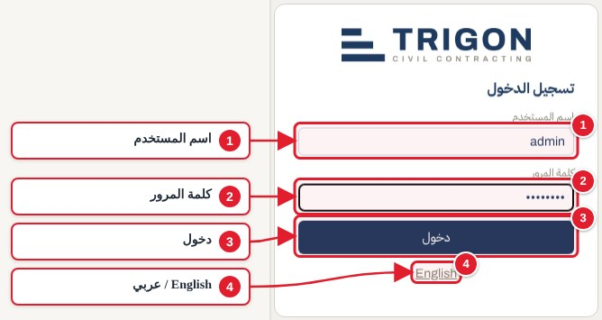
اسم المستخدم الذي أعطاك إياه مدير النظام.
كلمة المرور. بعد 8 محاولات خاطئة يُقفل الحساب مؤقتاً.
اضغط «دخول».
تبديل اللغة بين العربية والإنجليزية.
1.2 اللغة
في شاشة الدخول اضغط English / عربي أسفل الزر.
بعد الدخول استخدم زر English / عربي أسفل القائمة الجانبية، فيتغير اتجاه الواجهة كلها.
1.3 الشاشة
القائمة الجانبية مقسّمة إلى: المشاريع والمبيعات، المشتريات والمخزون، المحاسبة، الموارد البشرية، الضرائب والامتثال.
لا تظهر لك إلا الصفحات المسموحة لدورك (انظر البند 3).
على الجوال تُفتح القائمة من زر ☰ في الأعلى.
أغلب القوائم تعمل بنفس الطريقة: + إضافة (أو + جديد) يفتح نموذجاً، والضغط على أي سطر يفتحه للتعديل، وحفظ يحفظه، وحذف يحذفه (إذا كان مسموحاً).
في كل صفحة زر 🖨 طباعة بالترويسة، وفي أغلب القوائم زر Excel.
زر خروج أسفل القائمة الجانبية.
📷 لوحة التحكم بعد الدخول
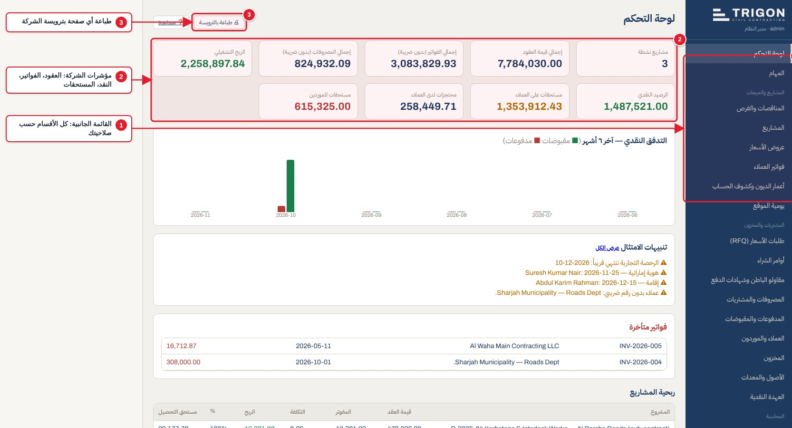
القائمة الجانبية: فيها كل أقسام النظام مقسّمة إلى مجموعات، ولا يظهر لك إلا ما يسمح به دورك. في أسفلها زر اللغة وزر الخروج.
مؤشرات الشركة: المشاريع النشطة، قيمة العقود، المفوتر، المصروفات، الربح، الرصيد النقدي، المستحقات والمحتجزات. تحتها التدفق النقدي وتنبيهات الامتثال والفواتير المتأخرة وربحية كل مشروع.
يطبع الصفحة الحالية على ترويسة الشركة مع الختم والتوقيع. موجود في كل صفحة.
2. الإعداد لأول مرة (مدير النظام)
2.1 إنشاء حساب المدير
أول مرة يُفتح النظام تظهر شاشة إعداد النظام لأول مرة.
أدخل اسم المستخدم وكلمة المرور (6 أحرف على الأقل) واسم الشركة.
على الخادم الأونلاين قد يُطلب رمز الإعداد السري، وهو قيمة SETUP_TOKEN في ملف .env على الخادم.
اضغط إنشاء الحساب، فتدخل كمدير للنظام.
📷 شاشة الإعداد لأول مرة
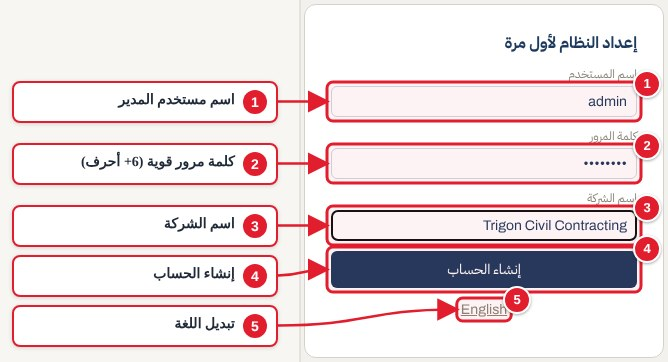
اكتب اسم مستخدم للمدير، مثل admin. ستستخدمه في كل مرة تدخل فيها.
كلمة مرور قوية من 6 أحرف على الأقل. لا تشاركها مع أحد.
اسم الشركة كما سيظهر في النظام (يمكن تعديله لاحقاً من الإعدادات).
اضغط «إنشاء الحساب» فتدخل مباشرةً كمدير للنظام.
لتبديل لغة الواجهة قبل البدء.
2.2 بيانات الشركة
القائمة: الإعدادات ← البطاقة الأولى.
عبّئ:
اسم الشركة (إنجليزي) واسم الشركة (عربي)
الاسم القانوني كما في الرخصة وشهادة الضريبة: يُطبع مع الرقم الضريبي أعلى الفواتير الضريبية والإشعارات الدائنة وشهادات مقاولي الباطن، وفي تذييلها (الشعار وباقي المستندات تبقى بالاسم التجاري)
أو ارفع كل صورة بنفسك (PNG بخلفية شفافة، حتى 2 ميجابايت): الشعار الأساسي، الشعار العربي (الترويسة الرسمية)، الشعار المعكوس، سطر الشعار (توقيع الإيميل)، العلامة فقط، الختم الرسمي، التوقيع المعتمد.
الختم الرسمي لا يأتي مع الكود، ارفعه من هنا. يُطبع فقط على المستندات الصادرة من النظام، فأعطِ صلاحية الطباعة للمخوَّلين فقط.
اختر ملف صورة الختم (PNG بخلفية شفافة، حتى 2 ميجابايت) فيُرفع مباشرة ويظهر في المعاينة.
بنفس الطريقة ارفع التوقيع المعتمد. يُطبع الختم والتوقيع على الفواتير والخطابات والتقارير.
2.4 إرسال البريد الإلكتروني (نسخة الخادم)
القائمة: الإعدادات ← إرسال البريد الإلكتروني.
طريقة الإرسال:
Microsoft 365 (موصى به لبريد Outlook): أدخل Directory (tenant) ID وApplication (client) ID وClient secret (Value) من تطبيق مسجّل في Microsoft Entra بصلاحية *Mail.Send*.
SMTP: أدخل خادم البريد (SMTP)، المنفذ (587 أو 465)، اسم مستخدم البريد، كلمة مرور البريد، والتشفير.
أدخل عنوان المرسِل (مثل accounts@trigon.ae).
اضغط حفظ، ثم اكتب بريدك في خانة التجربة واضغط إرسال تجربة.
📷 الإعدادات — إرسال البريد
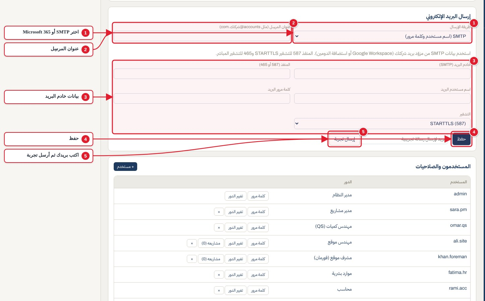
طريقة الإرسال: SMTP (اسم مستخدم وكلمة مرور) أو Microsoft 365 (الأفضل لبريد Outlook). تتغير الحقول حسب اختيارك.
العنوان الذي تصل منه الرسائل للعملاء والموردين، مثل accounts@trigon.ae.
بيانات خادم البريد من مزوّد البريد (الخادم، المنفذ، المستخدم، كلمة المرور، التشفير).
احفظ الإعدادات.
اكتب بريدك في الخانة واضغط «إرسال تجربة» للتأكد أن الإرسال يعمل.
2.5 ملفي الشخصي (توقيع الإيميل)
القائمة: الإعدادات ← ملفي الشخصي. أدخل الاسم الكامل، المسمى الوظيفي، الجوال ← حفظ. تظهر في توقيع كل إيميل ترسله من النظام.
2.6 تغيير كلمة المرور
القائمة: الإعدادات ← تغيير كلمة المرور ← اكتب الكلمة الجديدة ← تغيير.
2.7 نصوص المستندات والتواقيع
القائمة: الإعدادات ← بطاقة بيانات الشركة (لمدير النظام). هذه النصوص تُطبع تلقائياً على المستندات:
خانات التوقيع في شهادات دفع مقاولي الباطن: مفصولة بفاصلة، مثل QS / SQS, Site Engineer, Project Manager, General Manager.
الموقّع على عقود الباطن عن الشركة: الاسم، المنصب.
نص اتفاقية عقد الباطن القياسي: بنود كل اتفاقية. الكلمات بين {{ }} تُعبّأ تلقائياً (مثل {{subcontractor}} و{{value}} و{{retention_pct}} و{{payment_days}}). السطر الذي يبدأ برقم ونقطة (مثل 6. Payment) هو عنوان بند.
ملاحظات ثابتة على أوامر الشراء: سطر لكل ملاحظة.
الشروط العامة لأوامر الشراء: تُطبع صفحة ثانية في كل أمر شراء؛ اتركها فارغة لعدم طباعتها.
اضغط حفظ. اعرض نص الاتفاقية وشروط الشراء على محامٍ قبل اعتمادها، فهي نص عام للبداية.
📷 الإعدادات — الاسم القانوني والتواقيع
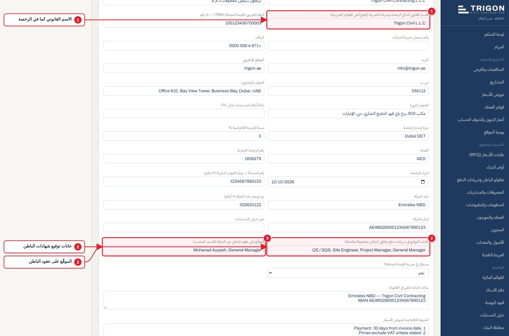
الاسم القانوني كما في الرخصة وشهادة الضريبة: يظهر مع الرقم الضريبي أعلى الفواتير الضريبية والإشعارات الدائنة وشهادات مقاولي الباطن.
خانات التوقيع في شهادات دفع مقاولي الباطن، مفصولة بفاصلة.
اسم ومنصب من يوقّع اتفاقيات عقد الباطن عن الشركة.
📷 الإعدادات — نصوص الاتفاقية وأوامر الشراء
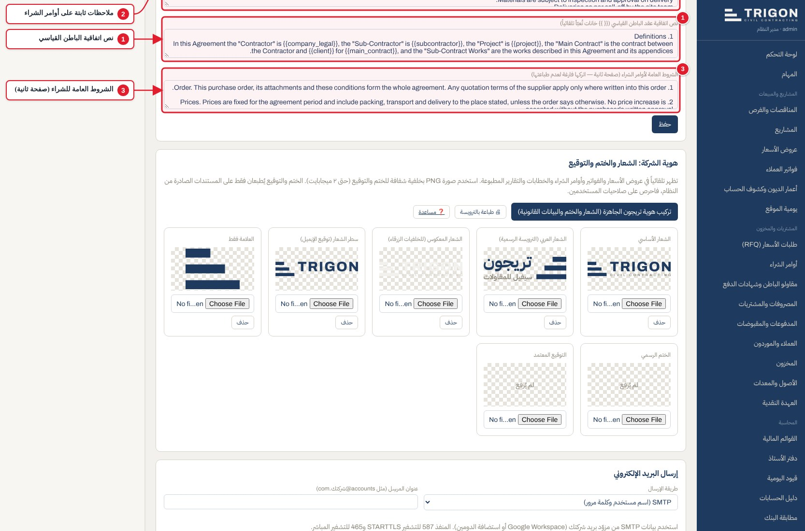
نص اتفاقية عقد الباطن القياسي: الكلمات بين {{ }} تُعبّأ تلقائياً من بيانات كل عقد.
الملاحظات الثابتة التي تُطبع على كل أمر شراء.
الشروط العامة للشراء: صفحة ثانية في كل أمر شراء؛ فارغة = بدون صفحة.
3. المستخدمون والصلاحيات
3.1 الأدوار
الدور
الصلاحيات
مدير النظام
كل شيء، ومنها الإعدادات والمستخدمون وإلغاء الفواتير الضريبية
محاسب
المالية والمحاسبة، بدون المستخدمين والإعدادات
مدير مشاريع
المشاريع والمشتريات والحضور، بدون الرواتب والضرائب
الموظفون، الإجازات، الطلبات، الخطابات، الرواتب، بدون الحسابات
عرض فقط
قراءة فقط
موظف (بوابة الموظف)
بوابته الخاصة فقط (الإجازات، القسائم، الطلبات، الحضور)
3.2 إضافة مستخدم
الإعدادات ← المستخدمون والصلاحيات ← + مستخدم.
أدخل اسم المستخدم وكلمة المرور (٦ أحرف على الأقل)، واختر الدور.
إذا كان المستخدم موظفاً أيضاً، اختر الموظف المرتبط (مطلوب لاعتماد الإجازات وللبوابة).
اضغط إنشاء.
📷 الإعدادات — المستخدمون والصلاحيات
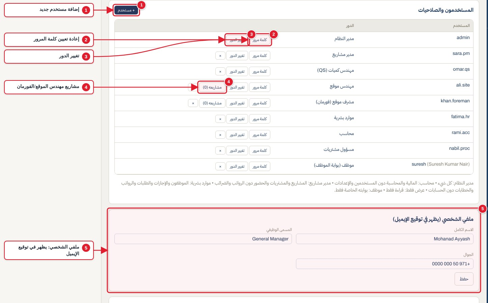
يفتح نموذج مستخدم جديد.
يضع كلمة مرور جديدة لمستخدم نسي كلمة المرور.
يغيّر دور المستخدم، فتتغير الصفحات التي يراها.
لمهندس الموقع والفورمان فقط: اختيار المشاريع التي يراها.
ملفك الشخصي: الاسم والمسمى والجوال تظهر في توقيع الإيميلات التي ترسلها.
📷 نموذج مستخدم جديد
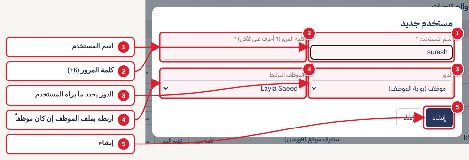
اسم المستخدم الذي سيدخل به (بدون مسافات).
كلمة مرور مؤقتة (6 أحرف على الأقل). اطلب منه تغييرها من الإعدادات.
الدور يحدد الصلاحيات (انظر الجدول أعلاه).
إذا كان موظفاً، اربطه بملفه ليرى بوابته وتعمل اعتمادات المدير المباشر.
اضغط «إنشاء».
3.3 إدارة مستخدم
في جدول المستخدمين:
كلمة مرور: لإعادة تعيين كلمة المرور.
تغيير الدور: لاختيار دور جديد.
مشاريعه (لمهندس الموقع والفورمان فقط): علّم المشاريع المسموحة، فلا يرى إلا هذه المشاريع وفرقها.
4. العملاء والموردون
القائمة: العملاء والموردون. أدخلهم قبل عروض الأسعار والفواتير والمشتريات.
اضغط + إضافة.
النوع: عميل أو مورد أو مقاول باطن.
الاسم (إلزامي).
الرقم الضريبي (TRN): مطلوب في الفاتورة الضريبية للشركات المسجّلة، ولاسترداد ضريبة المشتريات من الموردين.
الهاتف، البريد (يُستخدم عند إرسال العروض والفواتير)، العنوان (مطلوب في الفاتورة الضريبية).
اسم البنك، رقم الآيبان IBAN، ملاحظات.
اضغط حفظ.
افتح السجل مرة أخرى لإرفاق المستندات (الرخصة، شهادة الضريبة…) من لوحة المستندات المرفقة.
📷 إضافة عميل
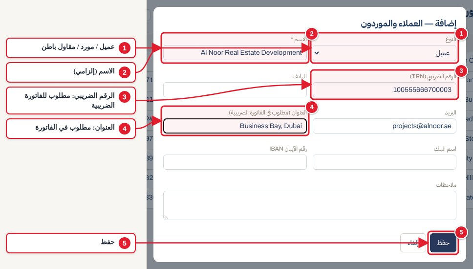
النوع: عميل، أو مورد، أو مقاول باطن. يحدد أين يظهر (العروض والفواتير، أو المشتريات).
الاسم الرسمي كما في الرخصة (إلزامي).
الرقم الضريبي 15 رقماً: يظهر على الفاتورة الضريبية، ويسمح باسترداد ضريبة المشتريات.
العنوان مطلوب في الفاتورة الضريبية. أكمل أيضاً الهاتف والبريد والبنك.
احفظ. بعدها افتح السجل لإرفاق الرخصة وشهادة الضريبة.
5. المناقصات والفرص
القائمة: المناقصات والفرص. تعرض اللوحة كل مرحلة وقيمتها، مع: الفرص المفتوحة، القيمة المرجّحة (القيمة × الاحتمال)، ما فزنا به هذه السنة، ونسبة الفوز.
📷 لوحة المناقصات
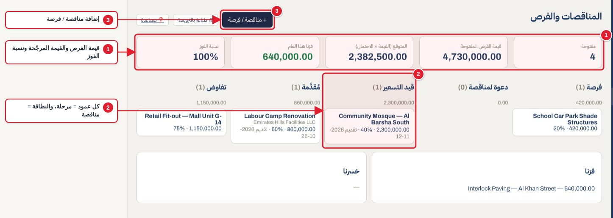
ملخص: عدد الفرص المفتوحة، قيمتها، القيمة المتوقعة (القيمة × الاحتمال)، ما فزنا به، ونسبة الفوز.
كل عمود مرحلة (فرصة، دعوة، تسعير، مقدَّمة، تفاوض)، وكل بطاقة مناقصة. اضغط البطاقة لفتحها.
إضافة مناقصة أو فرصة جديدة.
5.1 إضافة مناقصة
اضغط + مناقصة / فرصة.
عبّئ: العنوان، العميل أو اكتب أو اسم جهة جديدة (يُنشأ العميل تلقائياً)، المصدر (دعوة، توصية، بوابة مناقصات…).
المرحلة: فرصة ← دعوة لمناقصة ← قيد التسعير ← مُقدَّمة ← تفاوض ← فزنا / خسرنا.
القيمة التقديرية، احتمال الفوز %، تاريخ التقديم، الإغلاق المتوقع، المسؤول، ملاحظات.
حفظ.
5.2 متابعة المناقصة
اضغط على بطاقة المناقصة وغيّر المرحلة حسب التقدم.
إنشاء عرض سعر: ينشئ عرض سعر مرتبطاً بالمناقصة (ثم فتح عرض السعر للعمل عليه).
عند الفوز: فزنا — تحويل إلى مشروع، فيتحول العرض إلى مشروع وتُعلَّم المناقصة «فزنا».
عند الخسارة: غيّر المرحلة إلى خسرنا واكتب سبب الخسارة.
📷 نافذة المناقصة
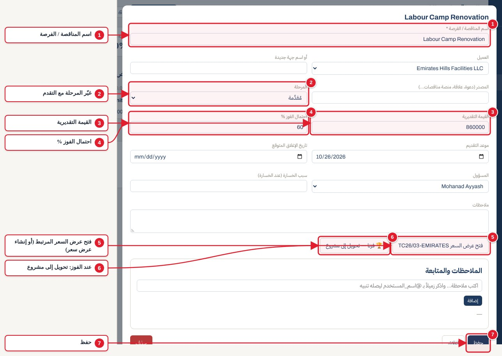
اسم المناقصة أو الفرصة.
المرحلة الحالية. غيّرها كلما تقدمت، فتنتقل البطاقة إلى العمود الصحيح.
القيمة التقديرية للمشروع.
احتمال الفوز %: يُستخدم في القيمة المتوقعة.
«إنشاء عرض سعر» يجهز عرضاً مرتبطاً بالمناقصة؛ بعد إنشائه يصبح الزر «فتح عرض السعر».
«🏆 فزنا — تحويل إلى مشروع»: يحوّل العرض المرتبط إلى مشروع ويعلّم المناقصة «فزنا».
احفظ التعديلات.
6. عروض الأسعار
القائمة: عروض الأسعار.
6.1 إنشاء عرض سعر
اضغط + جديد.
رقم العرض: اتركه فارغاً ليُعطى رقماً تلقائياً (مثل TC26/01-CLIENT).
التاريخ، العميل، اسم المشروع، صلاحية العرض (يوم) (الافتراضي 30)، الحالة (مسودة)، نسبة الضريبة %.
البنود: لكل بند عبّئ الوصف، الوحدة، الكمية، السعر، واختر الضريبة (خاضع 5% أو صفري أو معفى). اضغط + بند لإضافة بنود، و× لحذف بند. الإجمالي والضريبة يُحسبان أثناء الكتابة.
ملاحظات والشروط (تأتي من الإعدادات).
اضغط حفظ.
📷 قائمة عروض الأسعار
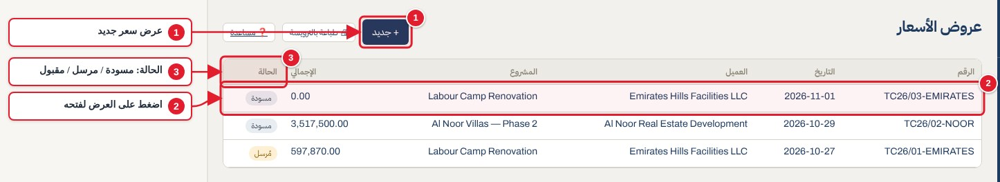
عرض سعر جديد.
اضغط أي عرض لفتحه وتعديله أو طباعته أو إرساله.
الحالة: مسودة، مُرسل، مقبول، مرفوض.
📷 نموذج عرض سعر جديد
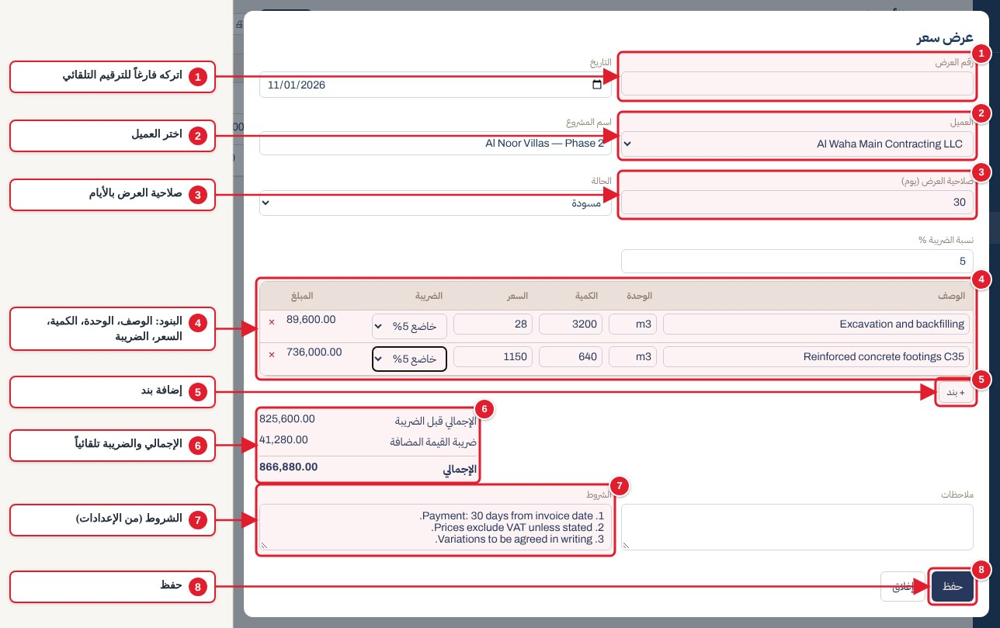
اترك رقم العرض فارغاً فيُعطى رقماً تلقائياً حسب البادئة.
اختر العميل (يجب أن يكون مضافاً في «العملاء والموردون»).
مدة صلاحية العرض بالأيام، وتُطبع على الغلاف.
جدول البنود: اكتب الوصف والوحدة والكمية والسعر، واختر نوع الضريبة لكل بند. المبلغ يُحسب تلقائياً، و× يحذف البند.
«+ بند» لإضافة سطر جديد.
الإجمالي قبل الضريبة، والضريبة، والإجمالي النهائي: تتحدث فوراً.
الشروط تأتي من الإعدادات ويمكن تعديلها لهذا العرض.
«حفظ» لحفظ العرض في القائمة.
6.2 إرسال العرض للعميل
افتح العرض ثم:
طباعة أو PDF: يُطبع بصفحة غلاف وترويسة الشركة. (لطباعة العرض بدون غلاف أضف ?cover=0 لرابط الطباعة.)
إرسال بالإيميل: اكتب بريد العميل، ويُرفق ملف PDF.
🔗 رابط القبول للعميل: رابط يفتحه العميل بدون تسجيل دخول، يراجع العرض ثم يقبله بالاسم والتوقيع أو يرفضه بملاحظة. يصلك تنبيه فوراً وتظهر النتيجة على العرض. استخدم نسخ أو إرسال بالبريد مع العرض أو معاينة.
إذا تابعت يدوياً، غيّر الحالة إلى مُرسل ثم مقبول أو مرفوض.
📷 أزرار عرض السعر بعد الحفظ
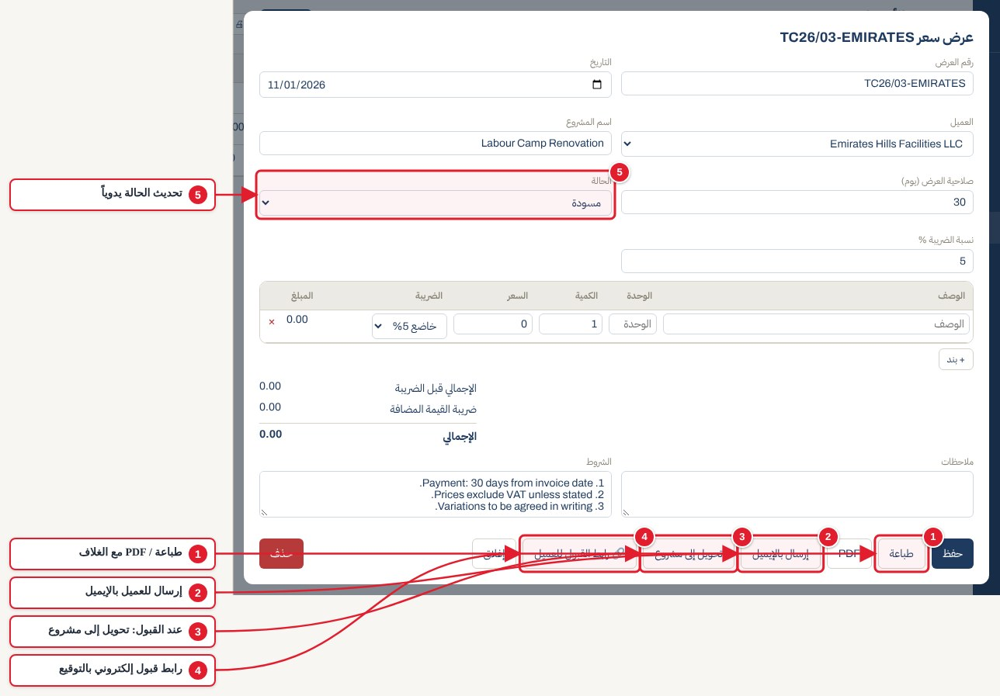
«طباعة» و«PDF»: العرض بغلاف وترويسة وختم.
«إرسال بالإيميل»: يرسله لبريد العميل مع PDF.
بعد موافقة العميل: «تحويل إلى مشروع» ينشئ المشروع وينسخ البنود إلى جدول الكميات.
«رابط القبول للعميل»: رابط يقبل فيه العميل العرض بالتوقيع أو يرفضه.
إذا تابعت يدوياً، غيّر الحالة إلى مُرسل أو مقبول أو مرفوض ثم احفظ.
📷 رابط القبول الإلكتروني
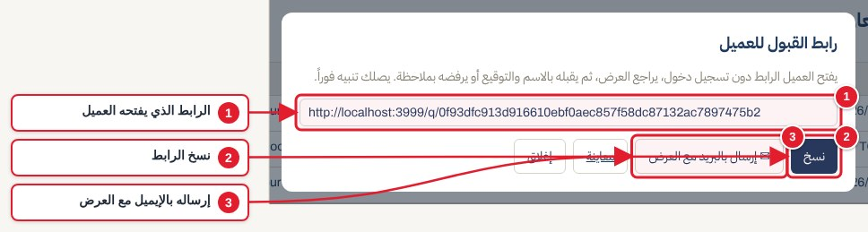
الرابط الذي يفتحه العميل بدون حساب.
نسخه لإرساله بالواتساب مثلاً.
أو إرساله بالإيميل مع العرض مباشرة.
6.3 تحويل العرض إلى مشروع
عند قبول العميل، افتح العرض واضغط تحويل إلى مشروع. يُنشأ المشروع وتُنسخ بنود العرض إلى جدول الكميات (BOQ) في المشروع.
7. المشاريع
القائمة: المشاريع.
7.1 إضافة مشروع
إما بتحويل عرض سعر (6.3) أو مناقصة (5.2)، أو:
اضغط + إضافة.
رمز المشروع (مثل P-2026-01)، اسم المشروع (إلزامي)، العميل، الموقع.
الإمارة (لإقرار الضريبة): مطلوبة للخانة 1 في إقرار الضريبة.
قيمة العقد (بدون ضريبة).
نسبة المحتجزات % (للفواتير)، مثل 10.
الحالة (نشط)، تاريخ البدء، تاريخ الانتهاء.
الدفعة المقدمة: الدفعة المقدمة % من العقد واسترداد المقدمة % من كل مستخلص (فارغ = نفس النسبة).
الإفراج عن المحتجزات: تاريخ التسليم، نسبة المحتجزات المفرج عنها عند التسليم % (الافتراضي 50)، فترة الصيانة (أشهر) (الافتراضي 12، والباقي يُفرج عنه بعدها).
حضور الجوال: خط العرض للموقع، خط الطول للموقع، نطاق الموقع بالمتر (الافتراضي 300). أسهل طريقة: افتح المشروع من جوالك وأنت في الموقع واضغط 📍 استخدم موقعي الحالي (وأنا في الموقع).
ملاحظات ← حفظ.
عند العمل كمقاول باطن لدى مقاول رئيسي عبّئ أيضاً:
العقد الرئيسي: اسم عقد المقاول الرئيسي.
رقم العقد / عقد الباطن / أمر الشراء من العميل: يُطبع على كل فاتورة وبروفورما (العملاء يرفضون الفاتورة بدونه).
مدة الدفع (أيام): منها يُحسب تاريخ استحقاق الفواتير الصادرة من الـ PC.
أساس الضريبة في شهادات الدفع (PC): *على الصافي بعد المحتجزات والخصومات* إذا كان المقاول الرئيسي يعتمد الضريبة بهذه الطريقة (ضريبة المحتجزات عند الإفراج)، وإلا *على قيمة الأعمال*.
📷 قائمة المشاريع
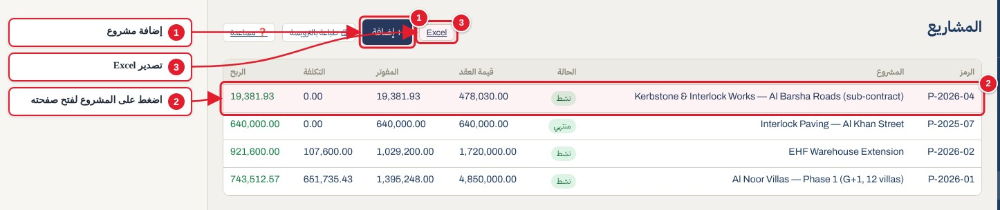
إضافة مشروع جديد.
اضغط المشروع لفتح صفحته الكاملة.
تصدير القائمة إلى Excel.
📷 نموذج مشروع جديد
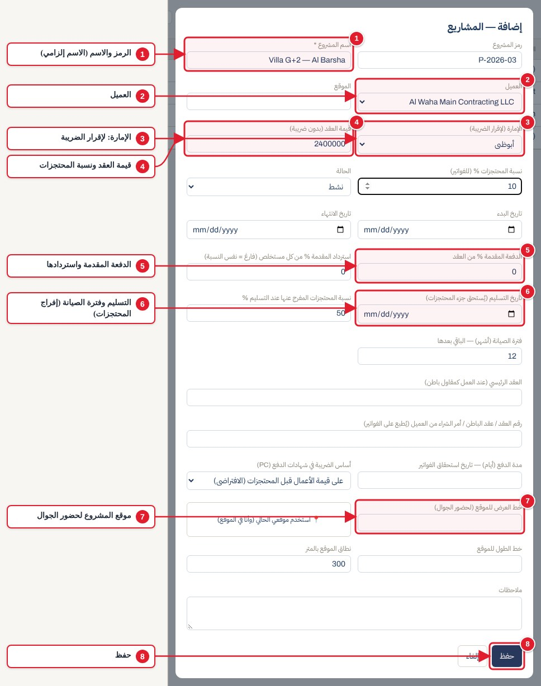
رمز المشروع واسمه. الاسم إلزامي، والرمز يساعد في البحث والتقارير.
العميل صاحب المشروع.
الإمارة: تُستخدم في الخانة 1 من إقرار الضريبة.
قيمة العقد بدون ضريبة ونسبة المحتجزات التي تُخصم من كل فاتورة.
نسبة الدفعة المقدمة ونسبة استردادها من كل مستخلص.
تاريخ التسليم ونسبة المحتجزات المفرج عنها فيه، وفترة الصيانة للباقي.
إحداثيات الموقع ونطاقه لتسجيل حضور العمال من الجوال.
احفظ.
📷 حقول العمل مع مقاول رئيسي في نموذج المشروع
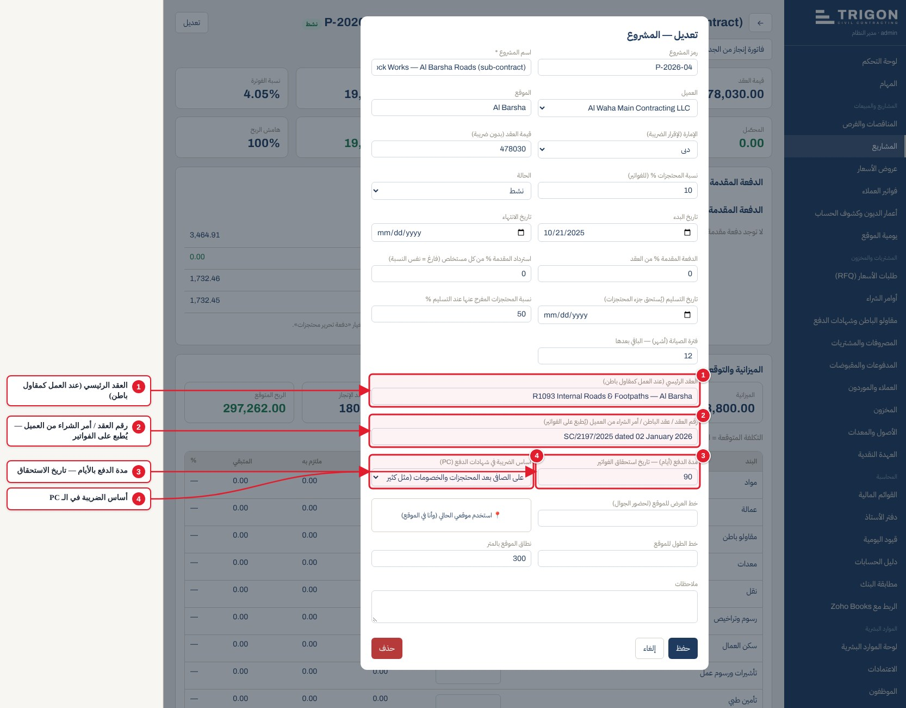
العقد الرئيسي: اسم عقد المقاول الرئيسي، يُطبع على البروفورما والفاتورة.
رقم العقد أو عقد الباطن أو أمر الشراء من العميل: يُطبع على كل فاتورة.
مدة الدفع بالأيام: تاريخ استحقاق الفواتير الصادرة من الـ PC.
أساس الضريبة في الـ PC: على الصافي بعد المحتجزات والخصومات، أو على قيمة الأعمال.
7.2 صفحة المشروع
اضغط على المشروع لفتحه. تظهر:
الأرقام: قيمة العقد، أوامر التغيير المعتمدة، القيمة المعدّلة، المفوتر، نسبة الفوترة، المحصّل، مستحق التحصيل، التكلفة، الربح، هامش الربح.
الأزرار: تعديل، فاتورة إنجاز من الجدول، + فاتورة، + مصروف.
حفظ. أوامر التغيير المعتمدة فقط تُضاف إلى القيمة المعدّلة للعقد.
📷 نافذة أمر التغيير
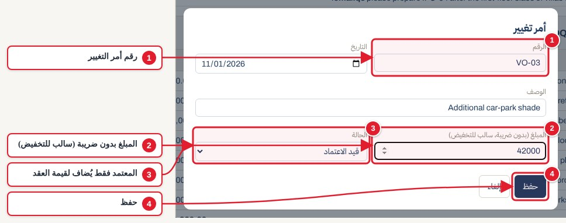
رقم أمر التغيير والتاريخ.
المبلغ بدون ضريبة. للتخفيض اكتب مبلغاً سالباً.
الحالة: «معتمد» فقط يُضاف إلى القيمة المعدّلة للعقد.
احفظ.
7.5 الميزانية والتوقعات
في بطاقة الميزانية والتوقعات في صفحة المشروع:
أدخل الميزانية لكل بند تكلفة.
اضغط حفظ الميزانية.
تعرض البطاقة: الفعلي، الملتزم به (أوامر الشراء ومقاولو الباطن)، المتبقي، التكلفة المتوقعة عند الإنجاز، والهامش المتوقع. التكلفة المتوقعة = الفعلي حتى الآن + ميزانية الأعمال غير المنجزة. يظهر تنبيه إذا تجاوزت التكلفة المتوقعة الميزانية.
📷 بطاقة الميزانية والتوقعات
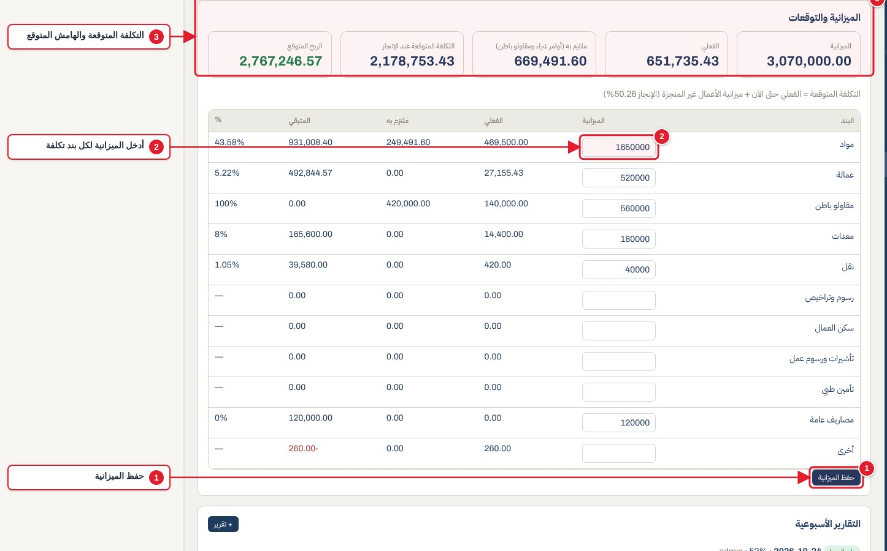
بعد إدخال الأرقام اضغط «حفظ الميزانية».
أدخل الميزانية لكل بند تكلفة (مواد، عمالة، مقاولو باطن…). بجانبها الفعلي والملتزم به والمتبقي.
التكلفة المتوقعة عند الإنجاز والهامش المتوقع؛ يظهر تنبيه أحمر إذا تجاوزت الميزانية.
7.6 التقارير الأسبوعية
في التقارير الأسبوعية اضغط + تحديث.
اختر الحالة، ونسبة الإنجاز %، والتاريخ، واكتب كيف يسير العمل (المنجز، العوائق، الخطوات القادمة).
حفظ. تُحفظ أرقام الميزانية والفعلي والتوقعات في ذلك التاريخ مع التقرير.
📷 التقارير الأسبوعية والملاحظات والمستندات
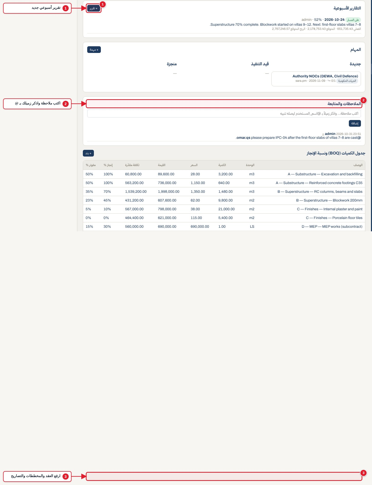
تقرير أسبوعي جديد: الحالة، نسبة الإنجاز، وملخص الأسبوع.
الملاحظات: اكتب ملاحظة، واذكر زميلاً بـ @اسم_المستخدم فيصله إشعار.
المستندات المرفقة: العقد، المخططات، التصاريح، مع تاريخ الانتهاء.
7.7 الدفعة المقدمة والمحتجزات
بطاقة الدفعة المقدمة والمحتجزات تعرض: المقدمة المفوترة، المسترد منها، والمتبقي، والمحتجزات المحجوزة، والمفرج عنها، والمستحقة عند التسليم وبعد فترة الصيانة.
إصدار فاتورة الدفعة المقدمة: ينشئ فاتورة ضريبية للمقدمة (عليها ضريبة)، وتُسترد تلقائياً من كل فاتورة إنجاز.
للإفراج عن المحتجزات سجّل دفعة مقبوضة على الفاتورة وعلّم هذه دفعة تحرير محتجزات (البند 9).
📷 الدفعة المقدمة والمحتجزات والإنتاجية
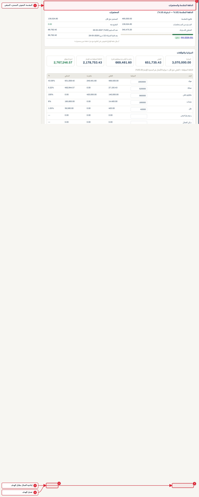
الدفعة المقدمة: المفوتر، المسترد من المستخلصات، والمتبقي. والمحتجزات: المحجوز، المفرج عنه، وما يُستحق عند التسليم وبعد الصيانة.
الإيراد لكل عامل في اليوم لكل شهر، مقارنةً بالهدف.
تعديل الهدف (درهم لكل عامل في اليوم).
7.8 الإيراد لكل عامل في اليوم
تعرض البطاقة لكل شهر: الأعمال المعتمدة ÷ أيام العمال (من الحضور) = الإيراد لكل عامل في اليوم، مقارنةً بالهدف. اضغط تعديل الهدف لتغييره.
7.9 الملاحظات والمستندات وغيرها
الملاحظات والمتابعة: اكتب ملاحظة، واذكر زميلك بـ @اسم_المستخدم ليصله تنبيه.
شهادة الدفع (المستخلص) / المستخلص PDF: يطبع المستخلص المرحلي (IPC): لكل بند الكمية والسعر، السابق، الحالي، التراكمي والنسبة، ثم المحتجزات، واسترداد المقدمة، والصافي، والضريبة، والمستحق.
8.2 فاتورة يدوية
+ جديد (أو + فاتورة من صفحة المشروع).
رقم الفاتورة (تلقائي، مثل INV-2026-001)، التاريخ، المشروع (إلزامي)، تاريخ الاستحقاق، نسبة الضريبة %، نسبة المحتجزات %.
أضف البنود كما في عرض السعر ← حفظ.
يظهر تنبيه إذا كان العميل بدون رقم ضريبي أو بدون عنوان، فصحّح بياناته من العملاء والموردون.
8.3 بعد الإصدار
افتح الفاتورة:
طباعة، PDF، إرسال بالإيميل.
تذكير بالسداد (يظهر فقط للفاتورة المتأخرة): يرسل تذكيراً بالرصيد المستحق.
تسجيل دفعة: انظر البند 9.
إصدار إشعار دائن: اكتب السبب، فيُنشأ إشعار دائن على الفاتورة (لتخفيض الفاتورة أو إلغائها).
إلغاء الفاتورة (لمدير النظام فقط): اكتب السبب الإلزامي. الفواتير الضريبية لا تُحذف أبداً؛ تُلغى أو يُصدر لها إشعار دائن.
📷 فاتورة إنجاز مفتوحة
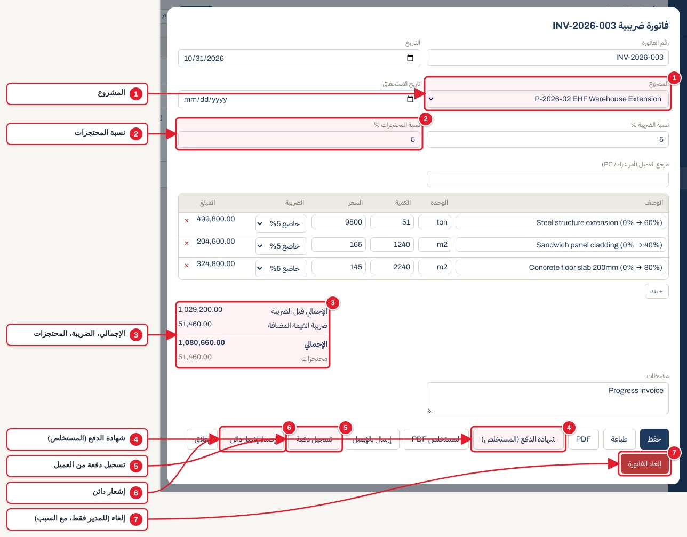
المشروع الذي تتبع له الفاتورة.
نسبة المحتجزات التي تُخصم من هذه الفاتورة.
الإجمالي والضريبة والمحتجزات.
«شهادة الدفع (المستخلص)» وPDF: المستخلص المرحلي مع السابق والحالي والتراكمي.
«تسجيل دفعة» عند استلام المبلغ من العميل.
«إصدار إشعار دائن» لتخفيض الفاتورة أو إلغائها محاسبياً.
«إلغاء الفاتورة»: لمدير النظام فقط، مع سبب إلزامي. الفاتورة الضريبية لا تُحذف.
8.4 العمل مع مقاول رئيسي: البروفورما (طلب الدفعة)
عند العمل لدى مقاول رئيسي يكون الترتيب: بروفورما ← شهادة دفع (PC) من المقاول الرئيسي ← فاتورة ضريبية مطابقة للـ PC. كل ذلك في صفحة المشروع، بطاقة البروفورما وشهادات الدفع (PC).
حدّث نسبة الإنجاز % لبنود جدول الكميات (7.3).
اضغط + بروفورما (طلب دفعة). تُعبّأ من جدول الكميات: الكمية السابقة (كما في آخر اعتماد) والكمية التراكمية حتى الآن.
أدخل للأعمال حتى تاريخ، والمواد بالموقع (تراكمي) إن وجدت، وعدّل أي كمية تراكمية. اضغط حفظ وإعادة الحساب.
الملخص تراكمي مثل الـ PC: قيمة الأعمال (A)، ثم المحتجزات، والخصومات حسب آخر PC، والدفعات السابقة (B)، ثم الصافي.
طباعة / PDF: PROFORMA INVOICE بالإنجليزية: جدول الكميات بالكميات والمبالغ، والملخص، والصافي بالحروف. بدون ضريبة أو رقم ضريبي أو بيانات بنك وبدون أثر محاسبي، فهي للمقاول الرئيسي ليطابقها مع جداوله.
أرسلها، ثم اضغط تعليم كمُقدَّم.
📷 بطاقة البروفورما وشهادات الدفع في صفحة المشروع
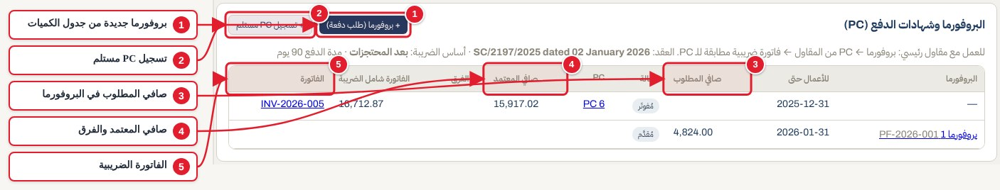
بروفورما جديدة تُعبّأ من جدول الكميات.
تسجيل PC مستلم بدون بروفورما (مثل أول PC في النظام).
صافي المطلوب في كل بروفورما.
صافي المعتمد في الـ PC والفرق عن المطلوب (بالأحمر إذا خُصم).
الفاتورة الضريبية الصادرة من الـ PC؛ اضغطها لفتحها.
📷 نافذة البروفورما
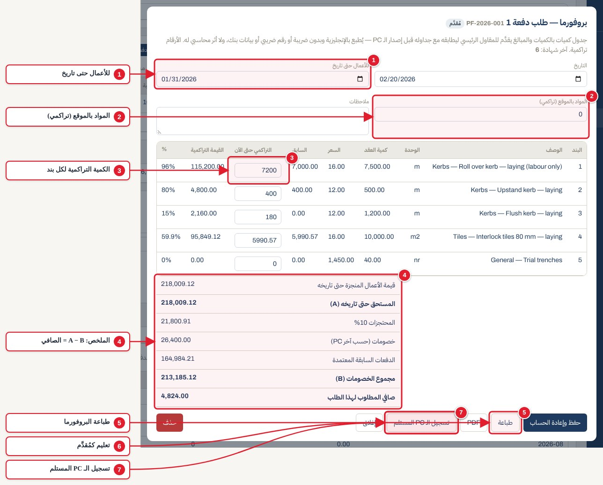
للأعمال حتى تاريخ.
المواد بالموقع (تراكمي) إن وجدت.
الكمية التراكمية لكل بند؛ السابق يأتي من آخر PC.
الملخص التراكمي: الأعمال (A)، المحتجزات والخصومات والدفعات السابقة (B)، والصافي.
طباعة البروفورما بالإنجليزية بدون ضريبة أو رقم ضريبي أو بيانات بنك.
بعد الإرسال للمقاول الرئيسي: تعليم كمُقدَّم.
عند وصول الـ PC: تسجيل الـ PC المستلم.
📷 البروفورما مطبوعة
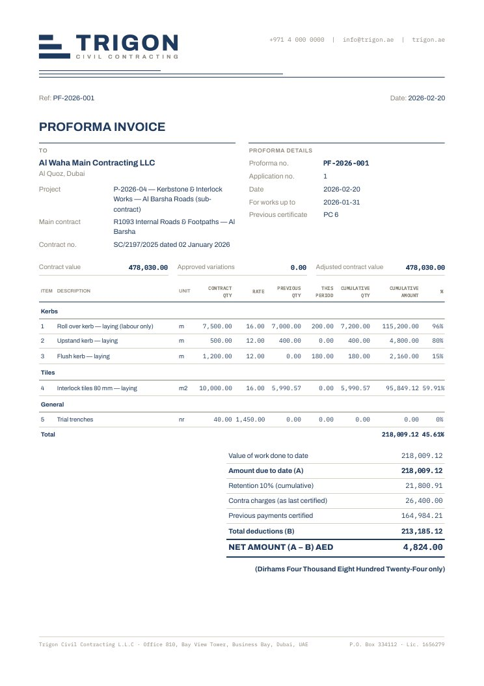
جدول الكميات: كمية العقد، السابق، هذه الفترة، التراكمي والمبلغ والنسبة.
الملخص والصافي بالحروف — بدون ضريبة أو رقم ضريبي أو بيانات بنك.
8.5 تسجيل الـ PC المستلم
عند وصول الـ PC افتح البروفورما واضغط تسجيل الـ PC المستلم (أو + تسجيل PC مستلم من البطاقة).
أدخل رقم الـ PC وتاريخ الإصدار وللأعمال حتى، والأرقام التراكمية كما هي مطبوعة على الـ PC: قيمة الأعمال، والمواد، واسترداد المقدمة، والمحتجزات، والإفراج عن المحتجزات، والخصومات، والدفعات السابقة؛ والضريبة المعتمدة إن وُجدت.
قيم الشهادة السابقة تُعبّأ من آخر PC. إذا كانت هذه أول شهادة تسجّلها في النظام (مثلاً PC رقم 6) فأدخل القيم «السابقة» مرة واحدة من الـ PC.
في الكميات المعتمدة لكل بند عدّل ما خصمه المقاول الرئيسي، ثم استخدم مجموع البنود كقيمة الأعمال.
الملخص يحسب الصافي والضريبة فوراً. بعد حفظ يتحقق النظام من الحسابات (الدفعات السابقة، الضريبة، مجموع البنود) ويعرض الفرق بين المطلوب والمعتمد. أرفق صورة الـ PC في المستندات المرفقة.
📷 نافذة تسجيل الـ PC
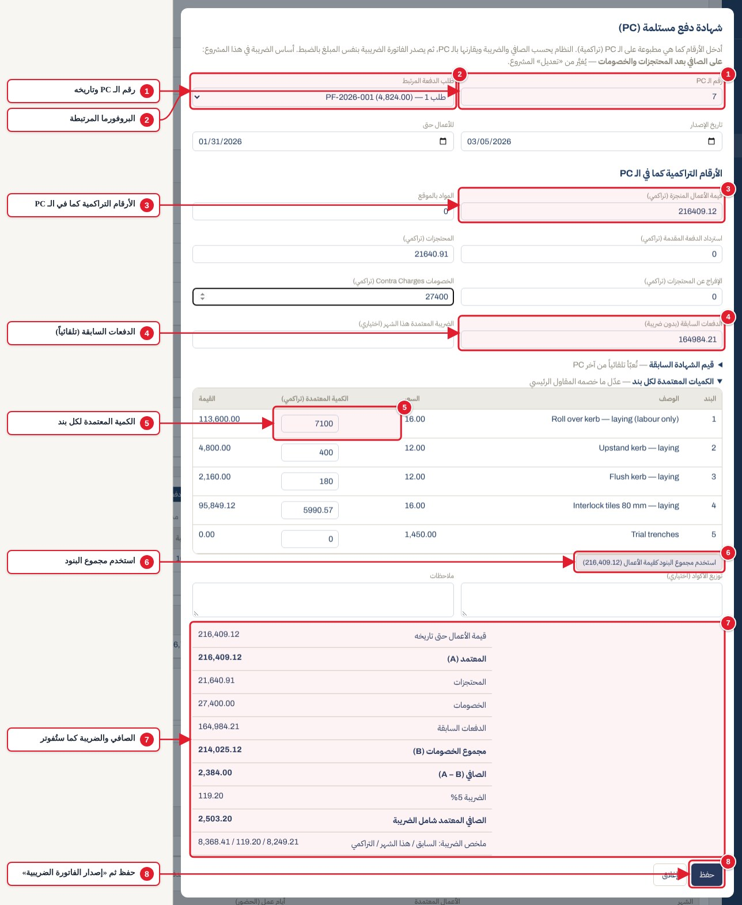
رقم الـ PC وتاريخ إصداره.
البروفورما التي يعتمدها هذا الـ PC.
الأرقام التراكمية كما هي مطبوعة على الـ PC.
الدفعات السابقة: تُحسب تلقائياً من الشهادات السابقة؛ قارنها بالـ PC.
الكمية المعتمدة لكل بند: عدّل ما خصمه المقاول الرئيسي.
استخدم مجموع البنود كقيمة الأعمال.
الصافي والضريبة والمجموع كما ستكون في الفاتورة، وملخص الضريبة.
احفظ؛ ثم يظهر زر «إصدار الفاتورة الضريبية».
8.6 الفاتورة الضريبية من الـ PC
في نافذة الـ PC اضغط إصدار الفاتورة الضريبية (المحاسب / مدير النظام) وأدخل تاريخ الفاتورة.
الفاتورة تساوي الـ PC بالفلس: قيمة أعمال الفترة، ناقص الخصومات والمحتجزات واسترداد المقدمة؛ والضريبة على الأساس الصحيح؛ وتاريخ الاستحقاق من مدة الدفع في المشروع؛ ورقم الـ PC في مرجعكم ورقم العقد في التفاصيل.
الدفاتر تبقى صحيحة: الإيراد بقيمة الأعمال، والمحتجزات ذمة على العميل (بدون ضريبة في أساس الصافي)، والخصومات تُنقص الإيراد؛ ونسبة الفوترة في جدول الكميات تتبع الكميات المعتمدة.
إذا كان في الـ PC فروقات يسألك النظام قبل الإصدار. لتعديل PC مفوتَر ألغِ الفاتورة (مدير النظام) فيُفتح الـ PC من جديد.
فواتير الـ PC لا تُرسل إلى Zoho تلقائياً حالياً؛ أدخلها في Zoho يدوياً.
📷 فاتورة ضريبية صادرة من PC
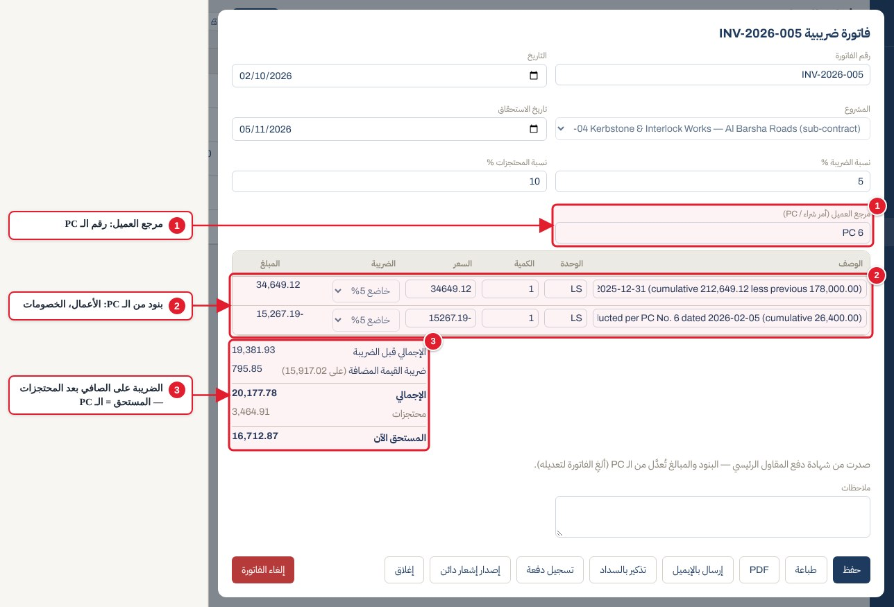
مرجع العميل: رقم الـ PC.
البنود من الـ PC: أعمال الفترة، والخصومات؛ لا تُعدَّل هنا.
الضريبة على الصافي بعد المحتجزات، والمستحق الآن يساوي الـ PC.
📷 الفاتورة الضريبية مطبوعة
الاسم القانوني والرقم الضريبي أعلى الصفحة؛ العميل ورقمه الضريبي وتفاصيل العقد والـ PC.
بيانات البنك بجانب الإجماليات، بدون خطوط توقيع.
9. المدفوعات والمقبوضات
القائمة: المدفوعات والمقبوضات (أو تسجيل دفعة من داخل الفاتورة أو المصروف).
اضغط + تسجيل دفعة.
النوع: مقبوضات من عميل أو دفعة لمورد.
مرتبطة بـ: اختر الفاتورة أو المصروف المفتوح.
التاريخ، المبلغ.
طريقة الدفع: تحويل بنكي، شيك، نقد، بطاقة. إذا كان لديك أكثر من حساب بنكي، اختر الحساب البنكي.
للشيكات: تاريخ استحقاق الشيك وحالة الشيك (قيد التحصيل / تم صرفه / مرتجع). الشيكات قيد التحصيل والمرتجعة لا تدخل في الرصيد النقدي، والشيك المرتجع لا يسدد الفاتورة.
المرجع / رقم الشيك.
إذا كانت دفعة محتجزات من العميل، علّم هذه دفعة تحرير محتجزات.
حفظ. لتحديث حالة شيك لاحقاً (مثلاً تم صرفه)، افتحه من قائمة المدفوعات.
📷 نافذة تسجيل دفعة
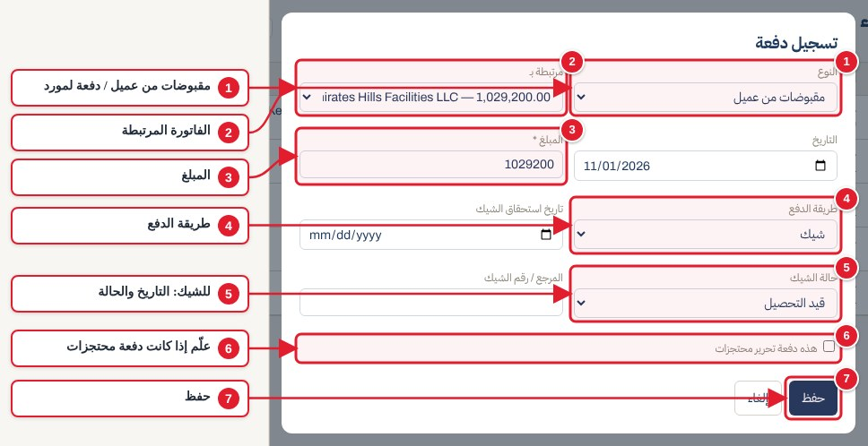
النوع: مقبوضات من عميل، أو دفعة لمورد.
الفاتورة أو المصروف المرتبط (تظهر المفتوحة فقط مع رصيدها).
المبلغ (يُقترح الرصيد المتبقي تلقائياً).
طريقة الدفع: تحويل، شيك، نقد، بطاقة. والحساب البنكي إذا كان لديك أكثر من بنك.
للشيك: تاريخ الاستحقاق والحالة. الشيك «قيد التحصيل» لا يدخل الرصيد النقدي حتى يُصرف.
علّم هذا الخيار إذا كانت الدفعة إفراجاً عن المحتجزات.
احفظ.
10. أعمار الديون وكشوف الحساب
القائمة: أعمار الديون وكشوف الحساب.
اختر مستحق لنا (العملاء) أو مستحق علينا (الموردون) وحتى تاريخ.
تُقسم الأرصدة حسب أيام التأخير، والمحتجزات غير المستحقة بعد تظهر منفصلة.
اضغط على العميل أو المورد لفتح كشف حساب، واختر الفترة (من / إلى)، ثم طباعة أو إرسال بالإيميل (مع PDF).
📷 أعمار الديون
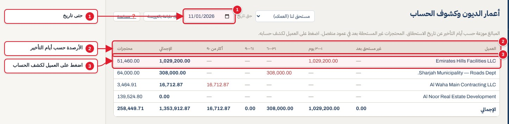
التاريخ الذي تُحسب عليه الأعمار.
الأرصدة موزعة حسب أيام التأخير: حالي، 1–30، 31–60، 61–90، أكثر من 90، والمحتجزات.
اضغط على العميل أو المورد لفتح كشف حسابه.
📷 كشف حساب عميل
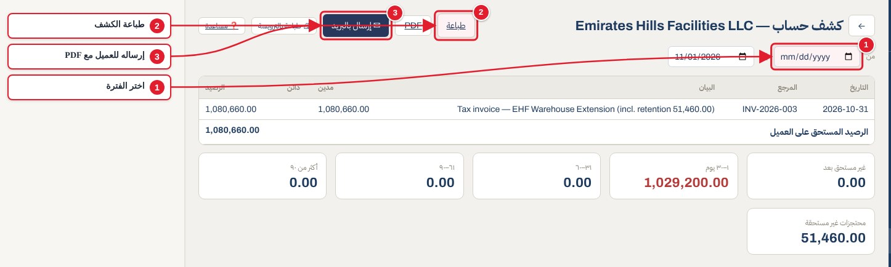
اختر الفترة.
طباعة الكشف بترويسة الشركة.
إرساله بالإيميل للعميل مع PDF.
11. يومية الموقع
القائمة: يومية الموقع.
+ إضافة.
المشروع، التاريخ، الطقس، عدد العمال، الأعمال المنجزة، العوائق والملاحظات، ملاحظات أخرى.
اضغط + مورد لكل مورد أرسل سعراً، واكتب سعره لكل بند، ومدة التوريد (أيام).
يحسب النظام إجمالي كل مورد ويُبرز الأقل.
حفظ.
اضغط ترسية + أمر شراء تحت المورد المختار، فيُنشأ أمر الشراء تلقائياً.
📷 طلب أسعار ومقارنة الموردين
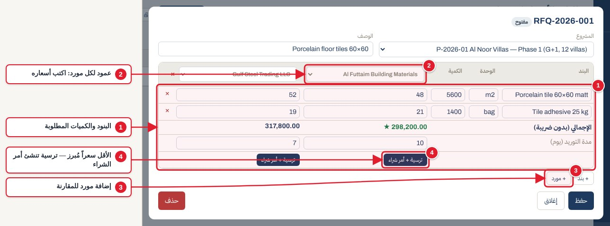
البنود المطلوبة: الوصف والوحدة والكمية.
عمود لكل مورد: اختر المورد واكتب سعره لكل بند. الإجمالي يُحسب تلقائياً.
إضافة مورد آخر للمقارنة.
الأقل سعراً يظهر مُبرزاً. «ترسية + أمر شراء» تحت المورد المختار ينشئ أمر الشراء فوراً.
12.2 أمر الشراء
القائمة: أوامر الشراء (أو يُنشأ من طلب الأسعار).
+ أمر شراء: المورد، المشروع، التاريخ، تاريخ التسليم، نسبة الضريبة %.
شروط الدفع، مكان التسليم ومسؤول الاستلام بالموقع (الاسم / الجوال)، مدة الاتفاقية من / إلى، رقم طلب الشراء الداخلي (PR)، مرجع عرض سعر المورد.
البنود: كود الصنف، الوصف (يقبل عدة أسطر)، الوحدة، الكمية، سعر الوحدة، خصم %، الضريبة. الصافي بعد الخصم ومجموع الخصم والإجماليات تتحدث أثناء الكتابة.
شروط خاصة بهذا الأمر وملاحظات عند الحاجة ← حفظ.
طباعة / PDF: أمر شراء عليه الرقم الضريبي للمورد ولتريجون، والأسعار الصافية، والإجمالي بالحروف، والملاحظات الثابتة، وخطوط توقيع للطرفين؛ والشروط العامة للشراء صفحة ثانية (الإعدادات، 2.7).
إرسال للمورد. عند وصول البضاعة اضغط استلام وإنشاء فاتورة مورد، والفاتورة تأخذ الصافي بعد الخصم.
البنود بالكود والخصم، والإجمالي بالحروف، والملاحظات الثابتة، وتوقيع الطرفين؛ الشروط العامة في الصفحة الثانية.
13. المصروفات والمشتريات
القائمة: المصروفات والمشتريات (أو + مصروف من صفحة المشروع).
+ جديد.
التاريخ، المورد، المشروع (فارغ = مصاريف عامة).
البند: مواد، عمالة، مقاولو باطن، معدات، نقل، رسوم وتراخيص، سكن العمال، تأشيرات ورسوم عمل، تأمين طبي، مصاريف عامة، أخرى — أو شراء أصل ثابت (يُهلك) للأصول.
الوصف، المبلغ (بدون ضريبة)، ضريبة القيمة المضافة (إن وجدت)، رقم فاتورة المورد.
للتكلفة المشتركة (إيجار، معدات مشتركة…): علّم توزيع المصروف على عدة مشاريع، وأضف المشاريع بزر + مشروع، واكتب النسبة لكل مشروع (المجموع 100%).
حفظ، ثم تسجيل دفعة عند الدفع.
لا تُدخل الرواتب هنا كـ«عمالة»؛ الرواتب تُسجَّل من وحدة الرواتب.
📷 مصروف موزّع على مشروعين
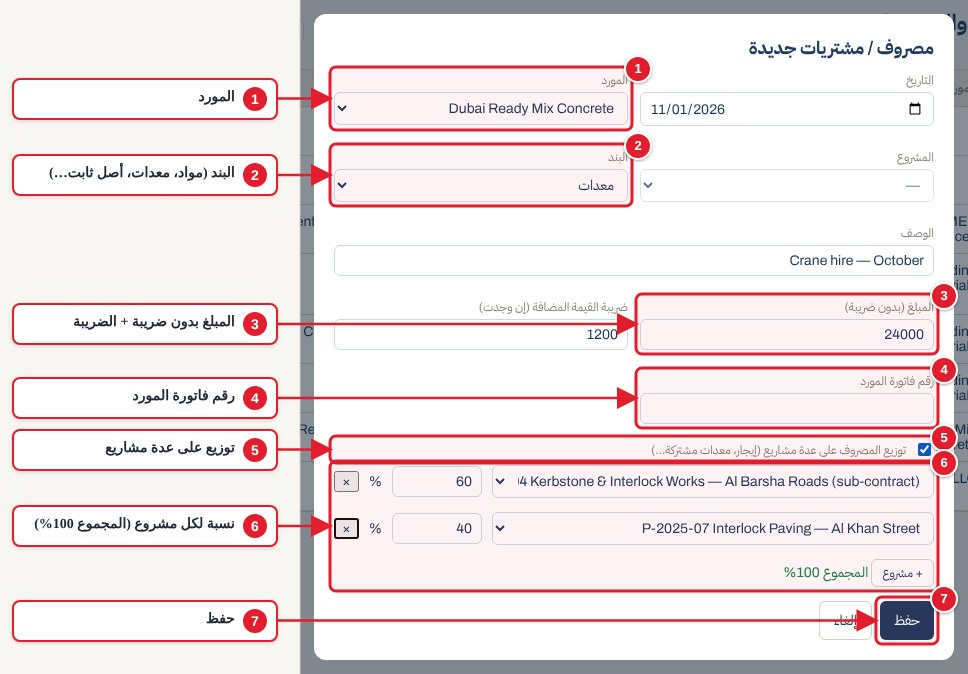
المورد.
البند: يحدد نوع التكلفة في تقارير المشروع (واختر «شراء أصل ثابت» للأصول).
المبلغ بدون ضريبة، ومبلغ الضريبة كما في فاتورة المورد.
رقم فاتورة المورد للرجوع إليها.
علّم هذا الخيار لتوزيع المصروف على عدة مشاريع.
اختر المشاريع ونسبة كل مشروع؛ يجب أن يكون المجموع 100% (يظهر بالأخضر).
احفظ، ثم «تسجيل دفعة» عند الدفع.
14. مقاولو الباطن وشهادات الدفع
القائمة: مقاولو الباطن وشهادات الدفع.
14.1 عقد مقاول الباطن
+ إضافة: مقاول الباطن، المشروع، نطاق العمل، قيمة العقد (بدون ضريبة)، نسبة المحتجزات %، الدفعة المقدمة، الحالة.
للشهادة والاتفاقية عبّئ أيضاً: رقم اتفاقية عقد الباطن وتاريخها، تاريخ البدء / الإنجاز / الإنجاز بعد التمديد، أوامر التغيير المعتمدة (مجموع)، أساس الضريبة في الشهادات (على الصافي بعد المحتجزات والخصومات، أو على قيمة الأعمال)، ونسبة الإضافة على الخصومات Contra % (مثل 12) ← حفظ.
📷 عقد مقاول باطن وشهاداته
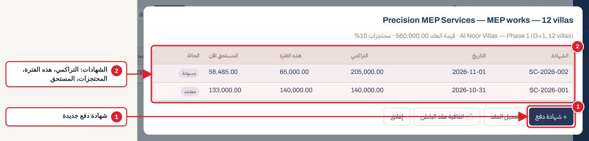
شهادة دفع جديدة لهذا العقد.
الشهادات السابقة: التراكمي، هذه الفترة، المحتجزات، المستحق، والحالة.
📷 بيانات عقد الباطن
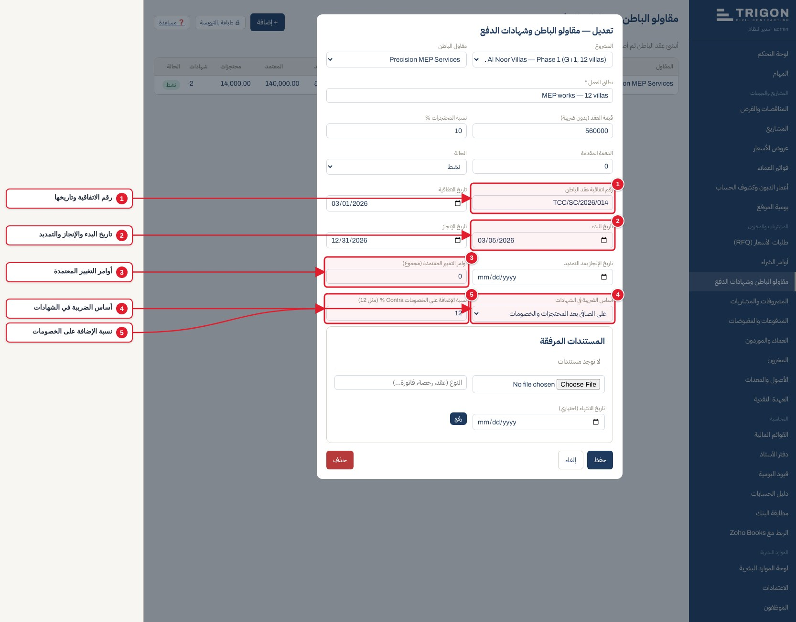
رقم الاتفاقية وتاريخها.
تواريخ البدء والإنجاز والتمديد.
مجموع أوامر التغيير المعتمدة.
أساس الضريبة في الشهادات.
نسبة الإضافة على الخصومات (مثل 12%).
14.2 شهادة الدفع
افتح العقد ← + شهادة دفع.
تاريخ الإصدار، للأعمال حتى تاريخ، قيمة الأعمال المنجزة حتى تاريخه (تراكمي) والمواد بالموقع (تراكمي).
لهذه الشهادة: استرداد الدفعة المقدمة، الخصومات Contra Charges (أو اكتب التكلفة في تكلفة الخصومات فتُضاف النسبة)، والإفراج عن محتجزات.
مرجع طلب الدفعة من المقاول، توزيع الأكواد (سطر لكل كود: الكود ثم المبلغ) وملاحظات.
الملخص يعرض هذه الشهادة؛ وبعد الحفظ: A وB التراكمية والدفعات السابقة وملخص الضريبة.
طباعة / PDF: PAYMENT CERTIFICATE FOR SUBCONTRACTOR بالشكل المعتاد للـ PC: قيمة العقد والتغييرات والضريبة والقيمة المعدّلة والتواريخ؛ الأعمال والمواد والمقدمة (A)؛ المحتجزات والخصومات والإفراج والدفعات السابقة (B)؛ الصافي والضريبة والصافي المعتمد شامل الضريبة، وملخص الضريبة (سابق / هذه / تراكمي)، والأكواد، والملاحظات، والمبلغ بالحروف، وخانات التوقيع من الإعدادات.
اعتماد وإنشاء مصروف (المحاسب): تُقفل الشهادة وتُسجَّل تكلفة الفترة (الأعمال + المواد − الخصومات) مع الضريبة كما هي معتمدة. أساس الضريبة يُثبَّت على كل شهادة عند إنشائها، فلا تتغير الشهادات الصادرة.
ادفعها من المدفوعات والمقبوضات.
📷 نافذة شهادة دفع مقاول الباطن
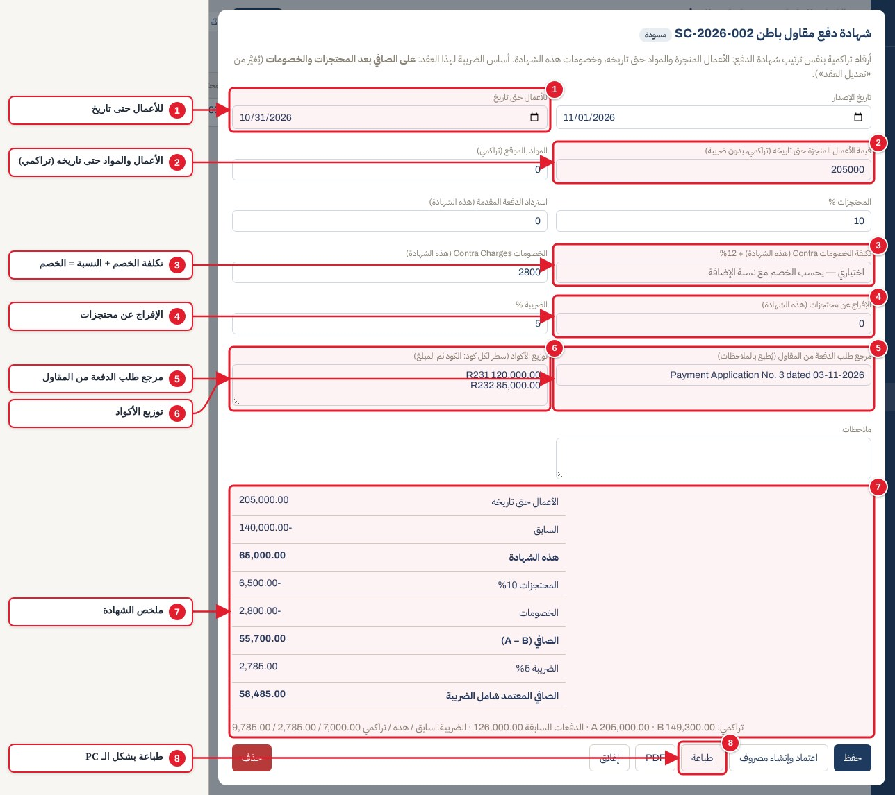
للأعمال حتى تاريخ.
الأعمال والمواد حتى تاريخه بشكل تراكمي.
تكلفة الخصم: اكتبها فتُضاف النسبة وتظهر في الخصومات.
الإفراج عن محتجزات في هذه الشهادة.
مرجع طلب الدفعة من المقاول؛ يُطبع في الملاحظات.
توزيع الأكواد: سطر لكل كود ثم المبلغ.
ملخص الشهادة، وبعد الحفظ الأرقام التراكمية وملخص الضريبة.
طباعة بشكل الـ PC.
📷 شهادة دفع مقاول الباطن مطبوعة
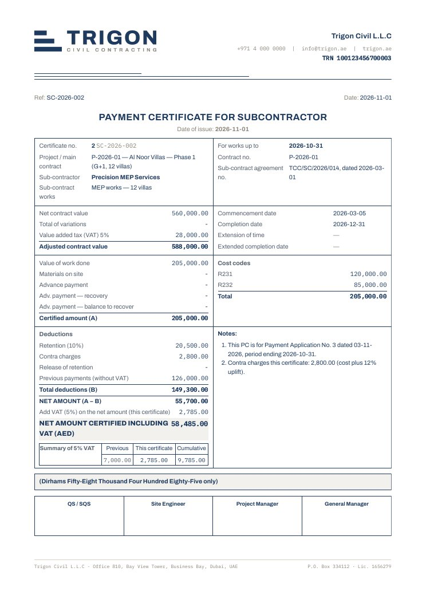
بيانات العقد والتواريخ، ثم المعتمد (A) والخصومات (B) والصافي والضريبة.
الدفع خلال (يوم من الفاتورة)، فترة الصيانة (أشهر)، رقم الرخصة التجارية لمقاول الباطن، ومن يوقّع عن تريجون (فارغ = من الإعدادات).
ملحق 1 — جدول الكميات: البند، الوصف، الوحدة، الكمية، السعر. علّم اجعل المجموع قيمة العقد عند الحاجة.
ملحق 2 — الشروط الخاصة ونطاق العمل.
ملحق 3 — مصفوفة المسؤوليات: لكل بند اختر المقاول، أو مقاول الباطن، أو الاثنين، أو N/A، مع ملاحظة.
نص الاتفاقية لهذا العقد: النص القياسي من الإعدادات؛ عدّله لهذا العقد فقط، أو إرجاع النص القياسي.
حفظ ثم طباعة / PDF: صفحة غلاف، والاتفاقية بالخانات معبّأة (الأسماء، الرخصة والرقم الضريبي، القيمة بالأرقام والحروف، المحتجزات وطريقة الإفراج، أيام الدفع، نسبة الخصومات، التواريخ)، وخطوط التوقيع والشهود، وكل ملحق في صفحة مستقلة.
الأطراف والبنود مع الخانات معبّأة من بيانات العقد.
15. المخزون
القائمة: المخزون.
+ إضافة صنف: الرمز، الاسم، الوحدة، حد إعادة الطلب، المكان.
حركة مخزون: اختر استلام أو صرف للمشروع أو تسوية (+/−)، والصنف، والكمية، وتكلفة الوحدة (للاستلام)، والمشروع، والمرجع ← حفظ.
تعرض القائمة الكمية، ومتوسط التكلفة، والقيمة، وتنبيه «منخفض» تحت حد إعادة الطلب.
المخزون يتابع الكميات ومتوسط التكلفة فقط؛ تكلفة المواد تُسجَّل من فواتير الموردين وأوامر الشراء.
📷 المخزون
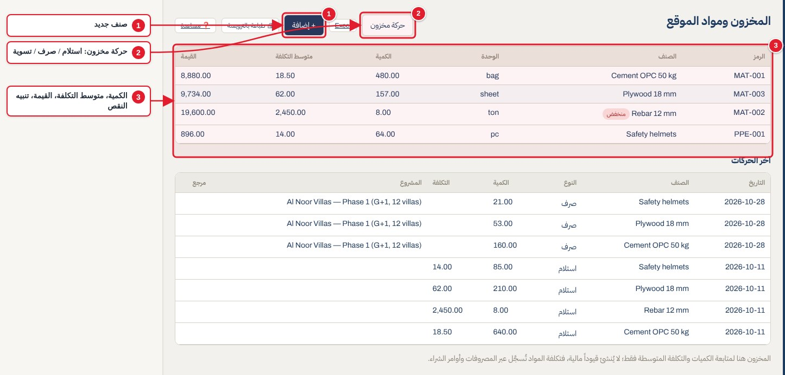
إضافة صنف جديد.
حركة مخزون: استلام، صرف لمشروع، أو تسوية.
الكميات ومتوسط التكلفة والقيمة، وتنبيه عند النزول تحت حد إعادة الطلب.
16. الأصول والمعدات
القائمة: الأصول والمعدات.
+ إضافة: الأصل، الفئة، الرقم التسلسلي / اللوحة، تاريخ الشراء، التكلفة، القيمة التخريدية، العمر الإنتاجي (سنوات)، المشروع الحالي، الحالة، تاريخ الاستبعاد ← حفظ.
الإهلاك بالقسط الثابت شهرياً من شهر الشراء، وتعرض القائمة مجمع الإهلاك والقيمة الدفترية.
سجّل فاتورة الشراء بالبند شراء أصل ثابت حتى لا تُحتسب مصروفاً كاملاً.
📷 الأصول والمعدات
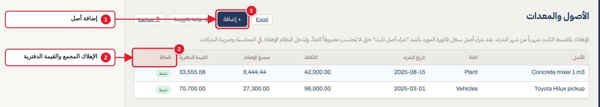
إضافة أصل (سيارة، معدة، جهاز).
الإهلاك المجمع والقيمة الدفترية تُحسب شهرياً تلقائياً.
17. العهدة النقدية
القائمة: العهدة النقدية.
+ تغذية العهدة: التاريخ، المبلغ، ملاحظة ← حفظ.
+ مصروف نقدي: التاريخ، المشروع، البند، الوصف، المبلغ (بدون ضريبة)، الضريبة ← حفظ. يُسجَّل كمصروف على المشروع ويُدفع من العهدة.
تعرض الصفحة رصيد العهدة. احتفظ بإيصال أو فاتورة ضريبية لكل مصروف.
📷 العهدة النقدية
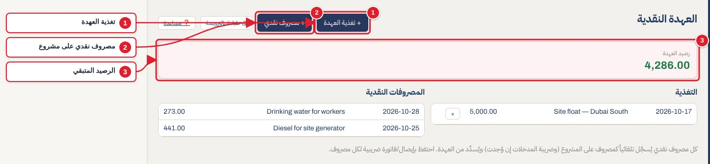
تغذية العهدة بمبلغ نقدي.
مصروف نقدي على مشروع (يُسجَّل كمصروف مع الضريبة).
الرصيد المتبقي في العهدة.
18. إضافة موظف
القائمة: الموظفون.
18.1 ملف الموظف
+ إضافة.
الهوية: الاسم (كما في جواز السفر) (إلزامي)، المهنة، رقم بطاقة العمل / Person Code (١٤ رقم)، رقم الهوية الإماراتية، رقم الجواز، الجنسية.
العمل: تاريخ الالتحاق، الحالة (نشط)، تحميل التكلفة على (مشروع، أو عمومي — الإدارة)، نهاية فترة التجربة (حتى ٦ أشهر)، المدير المباشر (يعتمد الإجازات أولاً).
الراتب: الراتب الأساسي، بدل سكن، بدل مواصلات، بدلات أخرى.
بنك الرواتب WPS: البنك / شركة الصرافة، رمز التوجيه (٩ أرقام)، الآيبان IBAN: مطلوبة لملف الرواتب.
تواريخ الانتهاء: انتهاء الهوية، انتهاء الإقامة، انتهاء الجواز، انتهاء بطاقة العمل، وتصل تنبيهات قبل الانتهاء.
الهاتف، البريد، جهة اتصال للطوارئ، رصيد إجازات افتتاحي (أيام)، ملاحظات.
حفظ. تعرض القائمة الإجمالي الشهري، ومكافأة نهاية الخدمة التقديرية، وتنبيهاً إذا كان الآيبان ناقصاً.
📷 قائمة الموظفين
إضافة موظف جديد.
اضغط الموظف لفتح ملفه الكامل.
مكافأة نهاية الخدمة التقديرية حتى اليوم.
يظهر «ناقص» بالأحمر إذا لم يُدخل الآيبان.
📷 نموذج موظف جديد
الاسم كما في جواز السفر (إلزامي). بجانبه المهنة.
رقم بطاقة العمل 14 رقماً، ورقم الهوية والجواز والجنسية: مطلوبة لـ WPS والمستندات.
تاريخ الالتحاق: منه تُحسب الإجازات ونهاية الخدمة.
تحميل التكلفة: المشروع الذي يُحمَّل عليه راتبه، أو «عمومي» للإدارة.
الراتب الأساسي والبدلات (سكن، مواصلات، أخرى).
البنك أو الصرافة، رمز التوجيه 9 أرقام، والآيبان: بدونها لا يدخل في ملف SIF.
تواريخ انتهاء الهوية والإقامة والجواز وبطاقة العمل: تصل تنبيهات قبل الانتهاء.
المدير المباشر: أول من يعتمد إجازاته.
نهاية فترة التجربة (حتى 6 أشهر).
احفظ.
18.2 بعد الحفظ — افتح ملف الموظف مرة أخرى
المستندات المرفقة: ارفع الجواز، الإقامة، الهوية، العقد… مع تواريخ الانتهاء.
حساب بوابة الموظف: اكتب اسم المستخدم وكلمة المرور (٦ أحرف+) ← إنشاء الحساب. (أو إعادة تعيين كلمة المرور إذا كان الحساب موجوداً.)
الانضمام والمغادرة ← بدء إجراءات الانضمام: علّم البنود الـ12 عند إنجازها (تصريح العمل وعقد MOHRE، الفحص الطبي، الهوية، التأمين الصحي، التأمين ضد التعطل ILOE، حساب الرواتب WPS، تعريف السلامة…).
الملاحظات والمتابعة مع الإشارة بـ @.
📷 أسفل ملف الموظف
المستندات المرفقة: ارفع الجواز والإقامة والعقد مع تاريخ الانتهاء.
حساب بوابة الموظف: اسم مستخدم وكلمة مرور ليدخل من جواله.
الانضمام والمغادرة: قائمة إجراءات الانضمام، والتسوية عند المغادرة.
📷 قائمة إجراءات الانضمام
علّم كل بند عند إنجازه؛ يُحفظ اسم من أنجزه والتاريخ.
قسم المغادرة والتسوية النهائية (البند 25).
19. الحضور والعمل الإضافي
القائمة: الحضور والعمل الإضافي.
📷 صفحة الحضور اليومي
اختر التاريخ.
«تسجيل حضور الفريق» للعمال بدون هاتف.
حالة اليوم لكل موظف: حاضر، غائب، إجازة، مرضي، عطلة، راحة.
ساعات الإضافي +25% (نهاري) و+50% (ليلي أو راحة). تنتقل للرواتب.
المشروع الذي عمل فيه (لتوزيع تكلفة الراتب).
19.1 الحضور من الجوال (الموظف)
يفتح الموظف بوابتي على الجوال ويضغط تسجيل الحضور (وتسجيل الانصراف في نهاية اليوم).
الوقت يُؤخذ من الخادم، ويُرفق موقع الهاتف.
خارج نطاق الموقع يُعلَّم السجل ويصل تنبيه للمدير المباشر (أو يُمنع، انظر 26.2).
19.2 العمال بدون هاتف (الفورمان / المشرف)
تسجيل حضور الفريق.
اختر دخول أو خروج، وعلّم الأسماء، ثم تسجيل. يُحفظ الوقت الحالي مع موقع جوالك.
الموارد البشرية فقط يمكنها إدخال وقت سابق (تصحيح من الموارد البشرية)، مثلاً موظف نسي تسجيل الانصراف.
📷 تسجيل حضور الفريق
اختر دخول أو خروج.
علّم أسماء العمال الموجودين.
«تسجيل»: يُحفظ الوقت من الخادم مع موقع جوالك.
19.3 كشف الحضور اليومي
اختر التاريخ. لكل موظف حدّد الحالة، والإضافي +25%، والإضافي +50%، والمشروع، والملاحظة، ويُحفظ كل سطر تلقائياً.
للعمل في يوم الراحة اختر التعويض: أجر +٥٠٪ أو يوم راحة بديل.
الساعات الإضافية والغياب تنتقل إلى الرواتب عند إنشاء كشف الشهر.
20. الإجازات
القائمة: الإجازات.
تسجيل إجازة لموظف (أو يطلبها الموظف من البوابة).
الموظف، النوع (سنوية، مرضية، بدون راتب، وضع، أبوة، وفاة، أخرى)، من، إلى، السبب ← حفظ.
قرار: موافقة أو رفض مع ملاحظة اختيارية (ثم تمر على مستويات الاعتماد).
أرصدة الإجازات: لكل موظف الأشهر، المستحق، الافتتاحي، المستخدم، الرصيد، والإجازات المرضية في آخر 12 شهراً. (يومان لكل شهر بعد 6 أشهر، و30 يوماً في السنة بعد السنة الأولى.)
أجر الإجازة المرضية يُحسب تلقائياً في الرواتب: 15 يوماً بأجر كامل، 30 بنصف أجر، 45 بدون أجر لكل سنة خدمة، وبدون أجر أثناء التجربة.
📷 صفحة الإجازات
تسجيل إجازة لموظف.
قرار: موافقة أو رفض الإجازة المعلّقة.
أرصدة الإجازات لكل موظف.
📷 نموذج إجازة
الموظف.
نوع الإجازة: سنوية، مرضية، بدون راتب…
من تاريخ وإلى تاريخ؛ تُحسب الأيام تلقائياً.
السبب.
احفظ.
21. طلبات الموظفين والسلف
القائمة: طلبات الموظفين.
📷 طلبات الموظفين والسلف
تسجيل طلب نيابةً عن موظف.
طلب خطاب (شهادة راتب، NOC…): «إصدار الخطاب» مباشرةً.
باقي الطلبات (سلفة، تجديد…): «قرار».
سلفة جديدة بأقساط تُخصم تلقائياً من الراتب.
21.1 الطلبات
الموظف يطلب من البوابة، أو تضغط الموارد البشرية طلب نيابةً عن موظف.
الموظف، نوع الطلب (شهادة راتب، شهادة عمل، شهادة عدم ممانعة NOC، خطاب تحويل راتب، شهادة خبرة، سلفة على الراتب، تجديد إقامة / هوية / جواز، شكوى / ملاحظة، طلب آخر)، المبلغ وعدد الأقساط (للسلفة)، التفاصيل.
لطلبات الخطابات اضغط إصدار الخطاب (يُعتمد الطلب ويُنشأ الخطاب)، ولباقي الطلبات اضغط قرار. رفض يطلب كتابة السبب.
21.2 السلف
السلف وجدول السداد ← + سلفة جديدة.
الموظف، المبلغ، عدد الأقساط، شهر أول خصم (YYYY-MM)، طريقة الصرف (بنك / نقد)، ملاحظة ← حفظ.
يُخصم القسط تلقائياً عند إنشاء رواتب الشهر، ويظهر الرصيد المتبقي في قسيمة الراتب والتسوية النهائية.
22. الاعتمادات
القائمة: الاعتمادات. تعرض الإجازات والطلبات التي وصلت إلى مستواك في سلسلة الاعتماد.
راجع الطلب (ورصيد إجازات الموظف).
موافقة أو رفض (مع ملاحظة). بعد موافقتك ينتقل للمستوى التالي، ويصل للموظف القرار النهائي.
📷 صفحة الاعتمادات
موافقة: ينتقل الطلب للمستوى التالي أو يُعتمد نهائياً.
رفض مع كتابة السبب؛ يصل للموظف.
23. الخطابات الرسمية
القائمة: الخطابات الرسمية.
خطاب جديد.
الموظف، نوع الخطاب (شهادة راتب، شهادة عمل، شهادة عدم ممانعة NOC، خطاب تحويل راتب، شهادة خبرة)، الجهة الموجّه إليها (اختياري)، الغرض.
إصدار وطباعة: يأخذ الخطاب رقماً مرجعياً تسلسلياً ويُطبع على الترويسة الرسمية ثنائية اللغة مع الختم والتوقيع. راجع النص قبل التوقيع.
لإعادة الطباعة لاحقاً: طباعة أو PDF من القائمة.
📷 نموذج خطاب جديد
الموظف.
نوع الخطاب: شهادة راتب، شهادة عمل، NOC، تحويل راتب، خبرة.
الجهة الموجّه إليها (مثل اسم البنك أو السفارة).
الغرض (سفر، قرض…).
إصدار وطباعة: يأخذ رقماً مرجعياً ويُطبع بالترويسة الرسمية والختم.
24. الرواتب ونظام حماية الأجور
القائمة: الرواتب ونظام حماية الأجور. الخطوات الشهرية:
تأكد أن الحضور والإجازات والسلف للشهر مكتملة.
اختر الشهر واضغط إنشاء كشف الشهر.
اقرأ بيانات ناقصة / تنبيهات (آيبان ناقص، رمز توجيه، رقم بطاقة العمل…) وصحّحها في ملف الموظف.
عدّل لكل موظف عند الحاجة: أيام العمل، أيام الإجازة، الساعات الإضافية العادية (+25%)، الساعات الليلية/الراحة (+50%)، المكافآت، الخصومات. يُعاد حساب الصافي تلقائياً.
الراتب اليومي = الإجمالي ÷ 30. أجر ساعة الإضافي = الأساسي ÷ 30 ÷ 8، +25% نهاراً، +50% ليلاً (10م–4ص) أو في الراحة والعطل الرسمية.
اعتماد الكشف: بعده لا يمكن تعديل الشهر، وتُوزَّع التكلفة على المشاريع ويُسجَّل مخصص نهاية الخدمة.
تحميل ملف SIF للبنك وارفعه عبر بوابة البنك أو شركة الصرافة (اطلب من البنك التحقق من أول ملف).
بعد التحويل اضغط تم تحويل الرواتب. الرواتب غير المدفوعة بعد 15 يوماً من نهاية الشهر تظهر كتنبيه امتثال.
يرى الموظفون قسائمهم في البوابة، وزر Excel يصدّر الكشف.
📷 كشف رواتب الشهر قبل الاعتماد
اختر الشهر.
«إنشاء كشف الشهر»: يجمع الرواتب والحضور والإضافي والإجازات والسلف. إذا كانت هناك بيانات ناقصة (آيبان، رمز توجيه…) يظهر مربع أحمر «بيانات ناقصة / تنبيهات» فوق الجدول؛ صحّحها في ملف الموظف أولاً.
الخانات قابلة للتعديل: الأيام، الإضافي، المكافآت، الخصومات؛ ويُعاد حساب الصافي.
«اعتماد الكشف»: يقفل الشهر ويسجل القيود ومخصص نهاية الخدمة.
📷 كشف معتمد ومدفوع
تحميل ملف SIF ورفعه في بوابة البنك أو الصرافة.
بعد التحويل اضغط «تم تحويل الرواتب»، فيظهر «مدفوع» مع التاريخ.
آخر يوم عمل، السبب (استقالة، إنهاء من الشركة، انتهاء العقد، أخرى)، تاريخ الإشعار، خصومات أخرى.
بدء المغادرة وحساب التسوية. يعرض النظام: الراتب حتى آخر يوم، بدل الإجازات المتبقية (على الأساسي)، مكافأة نهاية الخدمة (21/30 يوماً)، نقص فترة الإشعار (يجب أن يكون الإشعار بين 30 و90 يوماً)، السلفة المتبقية، الخصومات، والإجمالي.
عدّل المدخلات واضغط إعادة الحساب إذا لزم، وعلّم بنود المغادرة.
إنهاء الخدمة وإيقاف الحساب: تصبح حالة الموظف «ترك العمل» ويتوقف حسابه في النظام.
📷 المغادرة والتسوية النهائية
أدخل آخر يوم عمل، والسبب، وتاريخ الإشعار، وأي خصومات.
«بدء المغادرة وحساب التسوية»: يحسب الراتب حتى آخر يوم وبدل الإجازات ونهاية الخدمة والسلفة.
26. لوحة الموارد البشرية: مستويات الاعتماد وقواعد الحضور
القائمة: لوحة الموارد البشرية: الموظفون النشطون، الإجازات والطلبات المعلّقة، من في إجازة اليوم، المستندات التي تنتهي خلال 60 يوماً، وقائمة شهرية لمراجعة الالتزام بقانون العمل (حدود الإضافي، 7 أيام بدون راحة، العمل وقت حظر الظهيرة، تجربة أطول من 6 أشهر، التسجيل خارج الموقع).
📷 لوحة الموارد البشرية
الموظفون النشطون، والإجازات والطلبات المعلّقة، ومن في إجازة اليوم.
مستندات تنتهي خلال 60 يوماً.
مراجعة الالتزام بقانون العمل لهذا الشهر.
26.1 مستويات الاعتماد
في مستويات الاعتماد حدّد المستويات للإجازات ولطلبات الموظفين.
لكل مستوى: المعتمِد (المدير المباشر أو دور معيّن) والحد الأدنى (عدد الأيام للإجازة، أو المبلغ للطلب).
حفظ. الافتراضي: الإجازة ← المدير المباشر ثم الموارد البشرية؛ الطلبات ← الموارد البشرية ثم مدير النظام من 5,000.
📷 مستويات الاعتماد وقواعد الحضور
مستويات الاعتماد: لكل مستوى المعتمِد والحد الأدنى (أيام أو مبلغ).
حفظ المستويات.
قواعد الحضور: ساعات العمل، يوم الراحة، التسجيل خارج الموقع، رمضان، حظر الظهيرة.
26.2 قواعد الحضور
ساعات العمل اليومية (الحد ٨)، دقائق الاستراحة، يوم الراحة الأسبوعية.
التسجيل خارج نطاق الموقع: *يُسمح ويُعلَّم وينبَّه المدير* أو *يُمنع*.
رمضان من / إلى (ساعتان أقل يومياً).
حظر الظهيرة من / إلى (شهر-يوم)، مثل 06-15 إلى 09-15، وساعة بداية ونهاية الحظر (12:30–15:00).
خانة «أيام الفترة» في ملف SIF.
حفظ (مدير النظام).
27. بوابة الموظف
يدخل الموظف بالحساب الذي أنشأته الموارد البشرية (18.2)، فتفتح له بوابتي:
تسجيل الحضور / تسجيل الانصراف.
رصيد الإجازة السنوية (أيام)، المستحق حتى اليوم، الإجازات المرضية في آخر 12 شهراً، تواريخ انتهاء مستنداته.
طلب إجازة: نوع الإجازة، من، إلى، السبب ← حفظ.
طلب آخر: نوع الطلب، المبلغ والأقساط للسلفة، التفاصيل ← حفظ.
طلباتي: الحالة، والخطابات المعتمدة تُفتح بزر تحميل الخطاب أو PDF.
قسائم الراتب ← عرض / طباعة.
ثبّت النظام على الجوال (البند 32) لتصلك الإشعارات.
📷 بوابة الموظف على الجوال
زر كبير لتسجيل الحضور والانصراف مع الموقع.
طلب إجازة.
طلب آخر: شهادة راتب، NOC، سلفة…
رصيد الإجازات. وفي الأسفل: طلباتي، والخطابات، وقسائم الراتب.
28. المحاسبة
أغلب القيود تُنشأ تلقائياً من الفواتير والمصروفات والمدفوعات والرواتب والأصول.
دليل الحسابات ← + حساب: الرمز (3–6 أرقام)، الاسم بالإنجليزية، الاسم بالعربية، النوع ← حفظ. الحسابات الأساسية لا تُحذف.
قيود اليومية ← + قيد جديد: التاريخ، البيان، والأسطر (الحساب، مدين، دائن، و+ سطر). يجب أن يكون القيد متوازناً ← حفظ.
القوائم المالية: اختر الفترة ← عرض: ميزان المراجعة، قائمة الدخل، المركز المالي.
مطابقة البنك:
إضافة حساب (الاسم، البنك، الآيبان، الحساب في الدفتر) إذا كان لديك أكثر من بنك.
استيراد كشف الحساب: ارفع ملف CSV من البنك أو الصق الأسطر ← استيراد.
مطابقة تلقائية، ثم مطابقة الباقي يدوياً (أو إلغاء المطابقة).
تأكد أن الفرق صفر.
📷 دليل الحسابات
حساب جديد.
اضغط حساباً لتعديل اسمه.
📷 قيد يومية يدوي
التاريخ والبيان.
الأسطر: اختر الحساب واكتب المدين أو الدائن.
إضافة سطر.
الحفظ يتطلب أن يتساوى المدين والدائن.
📷 القوائم المالية
الفترة من / إلى.
عرض.
الإيرادات والمصروفات وصافي الربح، ثم ميزان المراجعة وقائمة الدخل والمركز المالي.
📷 مطابقة البنك
الحسابات البنكية.
استيراد كشف البنك (CSV أو لصق).
مطابقة تلقائية للحركات.
رصيد الكشف، رصيد الدفاتر، والفرق (يجب أن يكون صفراً).
29. الربط مع Zoho Books
القائمة: الربط مع Zoho Books (مدير النظام / المحاسب). التفاصيل الكاملة في ZOHO.md.
الاتصال: مفاتيح Zoho تُقرأ من ملف .env على الخادم. أنشئ Self Client في Zoho API Console، وولّد كوداً بالصلاحيات الظاهرة، والصقه في كود الربط (Grant code) ← ربط، ثم اختر مؤسسة Zoho Books.
ربط الحسابات والمشاريع: البنك/النقد، حساب المصروفات الافتراضي، وتاغ أو مشروع Zoho لكل مشروع.
اختر تاريخ بداية الإرسال، ثم اضغط تجربة بدون إرسال (Dry run) للمعاينة.
إرسال إلى Zoho الآن، أو علّم تفعيل الربط وإرسال تلقائي كل يوم.
سجل الإرسال ← إعادة المحاولة للأخطاء. وتقرير المعاملات اليومي يعرض ما فُوتر وصُرف وقُبض ودُفع كل يوم.
في النسخة المستقلة استخدم ملفات جاهزة للاستيراد في Zoho Books (بدون API).
📷 الربط مع Zoho Books
تجربة بدون إرسال: تعرض ما سيُنشأ أو يُحدَّث في Zoho دون كتابة أي شيء. بعد الربط يظهر بجانبها «إرسال إلى Zoho الآن».
تقرير المعاملات اليومي: ما فُوتر وصُرف وقُبض ودُفع في كل يوم.
30. الضرائب والامتثال
ضريبة القيمة المضافة: اختر الفترة ← عرض. يعرض المبيعات الخاضعة والصفرية والمعفاة، ضريبة المخرجات، المشتريات، الضريبة القابلة للاسترداد، صافي الضريبة المستحقة للهيئة، الخانة 1 حسب الإمارة، والتنبيهات (مثل ضريبة مشتريات بدون رقم ضريبي للمورد). يُقدَّم الإقرار خلال 28 يوماً من نهاية الفترة عبر EmaraTax.
ضريبة الشركات: اختر السنة. يعرض الإيرادات والمصروفات والرواتب والربح والدخل الخاضع و9% فوق 375,000 درهم، وإعفاء الأعمال الصغيرة إذا كانت الإيرادات أقل من 3 ملايين.
الامتثال والتدقيق: كل التنبيهات (TRN أو رقم المنشأة ناقص، انتهاء الرخصة والإقامات، رواتب غير مدفوعة، شيكات مرتجعة…)، المواعيد المهمة، جاهزية الفوترة الإلكترونية، وسجل التدقيق لكل تعديل.
المستندات: كل المرفقات في مكان واحد، مع مستندات الشركة (الرخصة، عقد التأسيس، التأمينات…). ارفعها مع تاريخ الانتهاء لتصلك التنبيهات.
النظام غير معتمد رسمياً من الهيئة الاتحادية للضرائب أو وزارة الموارد البشرية أو المصرف المركزي. راجع الإقرارات وملف SIF مع محاسبك وبنكك.
📷 تقرير ضريبة القيمة المضافة
الفترة الضريبية.
المبيعات وضريبة المخرجات والمدخلات وصافي الضريبة.
المبيعات حسب الإمارة للخانة 1 في الإقرار.
📷 الامتثال والتدقيق
كل التنبيهات في مكان واحد: انتهاء الرخصة والهويات والإقامات، عملاء بدون رقم ضريبي، رواتب متأخرة، شيكات مرتجعة.
المواعيد الأساسية: إقرار الضريبة، ضريبة الشركات، الرواتب، ومدة حفظ السجلات.
جاهزية الفوترة الإلكترونية: الفواتير التي ينقصها بيانات.
📷 المستندات
مستندات الشركة مع تاريخ الانتهاء.
كل المرفقات في النظام.
31. المهام والملاحظات والإشعارات
المهام: + مهمة ← المهمة، المسؤول، تاريخ الاستحقاق، الحالة، التاغ، المشروع، التفاصيل، المهام الفرعية ← حفظ. بدّل بين مهامي وكل المهام المفتوحة.
الملاحظات: في المشاريع والموظفين، اذكر @اسم_المستخدم لتنبيه زميلك.
الإشعارات: الاعتمادات، القرارات، الإشارات، والتنبيهات. اضغط تفعيل الإشعارات على هذا الجهاز لتصلك على الجوال (على الآيفون أضف التطبيق للشاشة الرئيسية أولاً، iOS 16.4 أو أحدث). إرسال تجربة، تعليم الكل كمقروء.
📷 مهمة جديدة
عنوان المهمة.
المسؤول عنها، ويصله إشعار.
تاريخ الاستحقاق.
المشروع المرتبط.
احفظ.
📷 الإشعارات
تفعيل الإشعارات على هذا الجهاز (الجوال) لتصلك الاعتمادات والتنبيهات حتى والتطبيق مغلق. أسفلها قائمة الإشعارات، و«تعليم الكل كمقروء» عند وجود إشعارات.
32. الطباعة وPDF وExcel والجوال
المستندات (عرض سعر، فاتورة، أمر شراء، مستخلص، خطاب، قسيمة راتب): طباعة أو PDF من داخل المستند.
أي صفحة: 🖨 طباعة بالترويسة، وزر Excel يصدّر القائمة.
التثبيت على الجوال:
آيفون: Safari ← زر المشاركة ← إضافة إلى الشاشة الرئيسية.
أندرويد: قائمة المتصفح ← تثبيت التطبيق / Add to Home screen.
عند توفر نسخة جديدة اضغط على الشريط للتحديث.
📷 النظام على الجوال
زر ☰ يفتح القائمة.
📷 القائمة على الجوال
اختر الصفحة من القائمة.
الترويسة على كل صفحة: المستندات المطبوعة تكرر الترويسة أعلى كل صفحة وتترك مساحة للتذييل، فلا يمر النص تحتهما. الفواتير الضريبية والإشعارات الدائنة وشهادات مقاولي الباطن تُظهر الاسم القانوني والرقم الضريبي في الأعلى؛ والبروفورما بدون رقم ضريبي.
33. النسخ الاحتياطي ونصائح مهمة
الإعدادات ← نسخة احتياطية ← تحميل النسخة الاحتياطية: مرة أسبوعياً على الأقل، واحفظها خارج الجهاز. تحتوي على المرفقات وكلمة مرور البريد، فاحفظها في مكان آمن.
استخدم كلمة مرور طويلة وفريدة للمدير، ولا تشارك حساب المدير؛ أعطِ كل شخص مستخدماً ودوراً خاصاً به.
احتفظ بالسجلات المالية 5–7 سنوات.
بعد كل تحديث للكود أعد تشغيل الخادم.
34. أسئلة شائعة
السؤال
الجواب
لا أستطيع حذف فاتورة
الفواتير الضريبية لا تُحذف. أصدر إشعاراً دائناً، أو يلغيها مدير النظام بزر إلغاء الفاتورة مع السبب.
لا أستطيع حذف مشروع
عليه فواتير أو مصروفات، فغيّر حالته إلى ملغي.
كشف الرواتب مقفل
تم اعتماده. التصحيح يكون في الشهر التالي (مكافأة / خصم).
الموظف لا يرى بوابته
يجب ربط المستخدم بملف الموظف (الإعدادات ← المستخدمون، أو أنشئ الحساب من ملف الموظف).
مهندس الموقع لا يرى مشاريع
الإعدادات ← المستخدمون ← مشاريعه ← علّم مشاريعه.
تسجيل الحضور يقول خارج الموقع
حدّد خط العرض والطول ونطاق المشروع (7.1، الخطوة 9).
This guide follows the screens of the system step by step, in the order a contracting company normally works: set up the company → clients → tender → quotation → project → invoicing and collection → purchasing → HR and payroll → accounting and tax. Button and menu names are written in bold, exactly as they appear in the English interface.
Searchable guide inside the system: click 📘 User guide in the side menu, or ❓ Help on any page to open the part that explains it. Type any word in the search box (e.g. retention, add employee, SIF) to show only the matching sections, with the word highlighted.
Reading the screenshots: every image is taken from the system itself with demo data. A red box marks the button or field, its number matches the numbered explanation under the image, and the arrow links each callout to its place on the screen.
Open the system's address in Chrome, Edge or Safari:
In the office: http://<server-IP>:3000
Online: your sub-domain, for example https://erp.trigon.ae
Enter your Username and Password, then press Sign in.
After 8 wrong passwords the account is locked for a while. Ask the administrator to reset your password if you forgot it.
📷 Sign-in screen
The username the administrator gave you.
Your password. After 8 wrong attempts the account is locked for a while.
Press Sign in.
Switch between Arabic and English.
1.2 Language
On the sign-in screen, click English / عربي under the button.
After signing in, use the English / عربي button at the bottom of the side menu. The whole interface switches direction (RTL/LTR).
1.3 The screen
Side menu (on the right in Arabic, on the left in English) grouped as: Projects & sales, Procurement & stock, Accounting, Human resources, Tax & compliance.
You only see the pages your role allows (see section 3).
On a phone the menu opens from the ☰ button at the top.
Most lists work the same way: + Add (or + New) opens a form; click any row to open and edit it; Save stores it; Delete removes it (when allowed).
Every page has a 🖨 Print on letterhead button, and most lists have an Excel button.
Logout is at the bottom of the side menu.
📷 The dashboard after signing in
The side menu: every section of the system grouped by area; you only see what your role allows. Language and Logout buttons are at its bottom.
Company KPIs: active projects, contract value, invoiced, expenses, profit, cash, receivables and retention. Below: cash flow, compliance alerts, overdue invoices and profit per project.
Prints the current page on the company letterhead with stamp and signature. It is on every page.
2. First-time setup (administrator)
2.1 Create the administrator account
The first time the system opens, it shows First-time setup.
Enter Username, Password (at least 6 characters) and Company name.
On an online server you may be asked for a Setup token — it is the SETUP_TOKEN value in the server's .env file.
Press Create account. You are now signed in as administrator.
📷 First-time setup screen
Type an administrator username, e.g. admin. You will use it every time you sign in.
A strong password of at least 6 characters. Do not share it.
The company name as it will show in the system (you can change it later in Settings).
Press Create account; you are signed in as administrator right away.
Switches the interface language before you start.
2.2 Company details
Menu: Settings → first card.
Fill in:
Company name (English) and Company name (Arabic)
Legal name as on the trade licence / TRN certificate — printed with the TRN at the top of tax invoices, credit notes and subcontractor certificates, and in their footer (the logo and other documents keep the brand name)
VAT TRN (15 digits) — required to issue tax invoices
Document reference prefix (e.g. TC) — quotations and letters are numbered like TC26/01-CLIENT
Licence authority, Trade licence no., Licence expiry (you get an alert before it expires)
Default VAT % (normally 5) and Currency (AED)
MOHRE establishment ID (13 digits), Company bank, Company bank routing code (9 digits), Company IBAN — all needed for the WPS salary file
Document footer text
VAT registered? — choose No if the company is not registered yet: invoices then default to 0% VAT and are titled "Invoice" instead of "Tax invoice".
Bank details (shown on invoices) — the text printed on every invoice for clients to pay you.
Default quotation terms — pre-filled into every new quotation.
Press Save.
📷 Settings — company details
Company name in English and Arabic as on the licence; printed on every document.
VAT TRN (15 digits). Without it tax invoices are not valid.
Numbering prefix, e.g. TC, so quotations and letters are numbered TC26/01-CLIENT.
MOHRE establishment ID, company bank, routing code and IBAN: all required for the WPS salary file.
If the company is not VAT-registered yet choose No: VAT becomes 0% and documents are titled Invoice.
Bank details printed at the bottom of every invoice so clients can pay you.
Remember to press Save after any change.
2.3 Logo, stamp and signature
Menu: Settings → Company identity: logo, stamp & signature.
Quick way: press Install the Trigon brand pack (logos, stamp, legal details) and confirm. This installs the Trigon logos and the legal details (name, licence, address, P.O. Box).
Or upload each image yourself (PNG with transparent background, up to 2 MB): Primary logo, Arabic logo (official letterhead), Reversed logo, Logo line (e-mail signature), Mark only, Official stamp, Authorised signature.
The official stamp is not shipped with the code — upload it here. It prints only on documents issued by the system, so give printing rights only to authorised people.
To replace an image, upload a new one; to remove it, press Remove.
📷 Settings — company identity
Installs the Trigon logos and legal details in one click.
Choose the stamp image (transparent PNG, up to 2 MB); it uploads at once and shows in the preview.
Upload the authorised signature the same way. Stamp and signature print on invoices, letters and reports.
2.4 Email sending (server edition)
Menu: Settings → Email sending.
Sending method:
Microsoft 365 (recommended for Outlook mail): enter Directory (tenant) ID, Application (client) ID, Client secret (Value) from an app registered in Microsoft Entra with the *Mail.Send* application permission.
SMTP: enter SMTP server, Port (587 or 465), SMTP username, SMTP password and Encryption.
Enter From address (e.g. accounts@trigon.ae).
Press Save, then type your email in the test box and press Send test.
📷 Settings — email sending
Sending method: SMTP (username & password) or Microsoft 365 (best for Outlook mail). The fields change with your choice.
The address clients and suppliers receive mail from, e.g. accounts@trigon.ae.
Mail-server details from your mail provider (server, port, user, password, encryption).
Save the settings.
Type your email in the box and press Send test to check sending works.
2.5 My profile (email signature)
Menu: Settings → My profile. Enter Full name, Job title, Mobile → Save. These appear in the signature of every email you send from the system.
2.6 Change your password
Menu: Settings → Change password → type the new password → Change.
2.7 Document texts and signatories
Menu: Settings → company card (administrator). These texts are printed on documents automatically:
Signature boxes on subcontractor payment certificates — comma-separated, e.g. QS / SQS, Site Engineer, Project Manager, General Manager.
Signs sub-contract agreements for the company — Name, Position.
Standard sub-contract agreement wording — the clauses of every sub-contract agreement. Words between {{ }} fill in by themselves (e.g. {{subcontractor}}, {{value}}, {{retention_pct}}, {{payment_days}}). A line that starts with a number and a dot (e.g. 6. Payment) is a clause heading.
Standard notes on purchase orders — one per line.
General conditions of purchase — printed as the second page of every purchase order; leave it empty for no conditions page.
Press Save. Have a lawyer review the agreement and purchase conditions before you rely on them — they are a general starting text.
📷 Settings — legal name and signatories
Legal name as on the licence and TRN certificate: shown with the TRN at the top of tax invoices, credit notes and subcontractor certificates.
Signature boxes on subcontractor payment certificates, comma-separated.
Name and position of whoever signs sub-contract agreements for the company.
📷 Settings — agreement and purchase-order texts
Standard sub-contract wording: words between {{ }} fill in from each subcontract.
Standard notes printed on every purchase order.
General conditions of purchase: page 2 of every purchase order; empty = no page.
3. Users and roles
3.1 Roles
Role
What it can do
Admin
Everything, including settings, users and voiding tax invoices
Accountant
Finance and accounting; no users or settings
Project manager
Projects, purchasing, attendance; no payroll or tax
Employees, leave, requests, letters, payroll; no accounts
Viewer
Read only
Employee (portal)
Their own portal only (leave, payslips, requests, attendance)
3.2 Add a user
Settings → Users & roles → + User.
Enter Username and Password (min 6), choose the Role.
If the user is also an employee, choose Linked employee (needed for leave approvals and the portal).
Press Create.
📷 Settings — users & roles
Opens the new-user form.
Sets a new password for a user who forgot theirs.
Changes the user's role, which changes the pages they see.
Site engineers and foremen only: choose the projects they see.
Your profile: name, title and mobile appear in the signature of emails you send.
📷 New user form
The username they will sign in with (no spaces).
A temporary password (6+ characters). Ask them to change it in Settings.
The role decides the permissions (see the table above).
If they are staff, link their employee record so the portal and line-manager approvals work.
Press Create.
3.3 Manage a user
In the users table:
Reset password — type the new password.
Change role — type/choose the new role.
Projects (site engineers and foremen only) — tick the projects they may see. They see only these projects and their crews.
4. Clients and suppliers
Menu: Clients & suppliers. Do this before quotations, invoices and purchases.
Press + Add.
Type: Client, Supplier or Subcontractor.
Name (required).
Tax registration no. (TRN) — required for tax invoices to VAT-registered businesses, and for recovering input VAT from suppliers.
Phone, Email (used when emailing quotations/invoices), Address (required on tax invoices).
Bank name, IBAN, Notes.
Press Save.
Open the record again to attach documents (trade licence, VAT certificate…) in the Attached documents panel.
📷 Adding a client
Type: client, supplier or subcontractor. Decides where it appears (quotes & invoices, or purchasing).
The legal name as on the licence (required).
15-digit TRN: shown on tax invoices and needed to recover input VAT.
The address is required on tax invoices. Also fill phone, email and bank.
Save. Then open the record to attach the licence and VAT certificate.
5. Tenders and opportunities
Menu: Tenders & opportunities. The board shows each stage with its value, plus Open pipeline, Weighted (value × probability), Won this year and Win rate.
📷 Tender board
Summary: open count, pipeline value, weighted value (value × probability), won this year, win rate.
Each column is a stage (lead, invited, preparing, submitted, negotiation); each card is a tender. Click a card to open it.
Add a new tender or opportunity.
5.1 Add a tender
Press + Tender / opportunity.
Fill in: Tender / opportunity (title), Client — or type Or a new organisation name (the client is created for you), Source (invitation, referral, tender portal…).
Stage: Lead → Invited → Preparing → Submitted → Negotiation → Won / Lost.
Lines: for each line fill Description, Unit, Qty, Rate and choose VAT (Standard 5%, Zero-rated or Exempt). Press + Line for more lines and × to delete a line. The subtotal, VAT and total update as you type.
Notes and Terms (pre-filled from Settings).
Press Save.
📷 Quotation list
New quotation.
Click any quotation to open, edit, print or send it.
Status: draft, sent, accepted, rejected.
📷 New quotation form
Leave the number empty to get an automatic number from the prefix.
Choose the client (it must exist in Clients & suppliers).
Validity in days; printed on the cover.
Lines: type description, unit, qty, rate and pick the VAT type per line. The amount is calculated; × deletes a line.
+ Line adds a row.
Subtotal, VAT and total update instantly.
Terms come from Settings and can be edited for this quotation.
Save stores the quotation in the list.
6.2 Send it to the client
Open the quotation, then:
Print or PDF — prints with the cover page and letterhead. (Add ?cover=0 to the print link to print without the cover.)
Email — type the client's email; the PDF is attached.
🔗 Client acceptance link — gives a link the client opens without signing in. They review the quotation and either accept with their name and signature or decline with a comment. You are notified at once and the result shows on the quotation. Use Copy, Email with the quotation or Preview.
Change Status to Sent, then Accepted or Rejected if you follow up by hand.
📷 Quotation buttons after saving
Print and PDF: the quotation with cover, letterhead and stamp.
Email: sends it to the client with a PDF.
After approval: Convert to project creates the project and copies the lines into the BOQ.
Client acceptance link: the client accepts with a signature or declines.
If you follow up by hand, set the status to sent, accepted or rejected and save.
📷 Online acceptance link
The link the client opens without an account.
Copy it, e.g. to send by WhatsApp.
Or email it with the quotation directly.
6.3 Convert to a project
When the client accepts, open the quotation and press Convert to project. The project is created and the quotation lines are copied into the project's BOQ.
7. Projects
Menu: Projects.
7.1 Add a project
Either convert a quotation (6.3) or a tender (5.2), or:
Press + Add.
Code (e.g. P-2026-01), Project name (required), Client, Location.
Emirate (for VAT return) — needed for box 1 of the VAT return.
Contract value (ex VAT).
Retention % (on invoices) — e.g. 10.
Status (Active), Start date, End date.
Advance payment: Advance payment % of contract and Advance recovery % per progress invoice (empty = same %).
Retention release: Handover date, Retention released at handover % (default 50), Defects liability period (months) (default 12; the rest is released after it).
Phone attendance: Site latitude, Site longitude, Site radius (m) (default 300). The easiest way: open the project on your phone while on site and press 📍 Use my current location (while on site).
Notes → Save.
Working as a subcontractor under a main contractor — also fill:
Main contract — the main contractor's contract name.
Contract / sub-contract / PO no. from the client — printed on every invoice and proforma (clients reject invoices without it).
Payment terms (days) — gives the due date of invoices issued from a PC.
VAT basis on payment certificates (PC) — *On the net after retention and contra charges* if the main contractor certifies VAT that way (the retention is taxed when released), otherwise *On the work value*.
📷 Project list
Add a new project.
Click a project to open its full page.
Export the list to Excel.
📷 New project form
Project code and name. The name is required; the code helps searching and reports.
The client who owns the project.
Emirate: used in box 1 of the VAT return.
Contract value ex VAT and the retention % deducted from each invoice.
Advance payment % and the recovery % per progress invoice.
Handover date, the retention % released then, and the defects period for the rest.
Site coordinates and radius for phone attendance.
Save.
📷 Fields for work under a main contractor
Main contract: the main contractor's contract name, printed on the proforma and invoice.
Contract / sub-contract / PO no. from the client: printed on every invoice.
Payment terms in days: due date of invoices issued from a PC.
VAT basis on PCs: on the net after retention and contra charges, or on the work value.
Buttons: Edit, Progress invoice from BOQ, + Invoice, + Expense.
📷 Project page
Live figures: contract, variations, invoiced and %, collected, receivable, cost, profit, margin.
Edit the project or change its status.
Issue a progress invoice from the BOQ completion.
Record an expense on the project (next to it, + Invoice for a manual invoice).
7.3 Bill of quantities (BOQ) and progress
Press + Item.
Section, Description, Unit, Quantity, Sell rate / unit, Budget cost / unit, Completion %.
Save. Click an item later to update Completion % as work progresses (site engineers can update completion straight from their project page).
Below the table: Budget vs actual (budget cost against actual cost).
📷 BOQ and variation orders
Add a new BOQ item.
Click any item to edit it or update its completion %.
Totals: BOQ value, budget cost and overall progress.
Add a variation order.
📷 BOQ item window
Item description (and the section above it to group items).
Quantity and sell rate: they give the item value.
Budget cost per unit: used in the budget and forecast.
Completion %: update it as work progresses; the progress invoice bills the change since the last one.
Save.
7.4 Variation orders
Press + Variation.
Number, Date, Description, Amount (ex VAT, negative for omission), Status (Pending / Approved / Rejected).
Save. Only Approved variations are added to the revised contract value.
📷 Variation order window
Variation number and date.
Amount ex VAT. For an omission use a negative amount.
Status: only Approved is added to the revised contract value.
Save.
7.5 Budget and forecast
In the Budget & forecast card on the project page:
Enter the budget for each cost category.
Press Save budget.
The card shows Actual, Committed (POs & subcontracts), Remaining, Forecast cost at completion and Forecast margin. Forecast cost = actual so far + budget of the work not yet done. A warning appears when the forecast is over budget.
📷 Budget & forecast card
After entering the figures press Save budget.
Enter the budget per category (materials, labour, subcontract…). Next to it: actual, committed and remaining.
Forecast cost at completion and forecast margin; a red warning shows when over budget.
7.6 Weekly updates
In Weekly updates press + Update.
Choose the status, Progress %, Date, and write How is it going? (done, issues, next steps).
Save — the budget, actual and forecast figures of that date are saved with the update.
📷 Weekly updates, notes and documents
New weekly update: status, progress % and a summary.
Notes: write a note; mention a colleague with @username to notify them.
Attached documents: contract, drawings, permits, with expiry date.
7.7 Advance payment and retention
The Advance payment & retention card shows the advance invoiced, recovered and still to recover, and retention held, released, due at handover and after the defects period.
Issue the advance payment invoice — creates the tax invoice for the advance (VAT applies). It is recovered automatically from each progress invoice.
To release retention, record a receipt on the invoice and tick This is a retention release (section 9).
📷 Advance, retention and productivity
Advance: invoiced, recovered from progress invoices, remaining. Retention: held, released, due at handover and after the defects period.
Revenue per worker-day per month against the target.
Edit the target (AED per worker-day).
7.8 Revenue per worker-day
The card shows, per month: Certified work ÷ Worker-days (attendance) = Per worker-day, against the Target. Press Edit target to change it.
7.9 Notes, documents and other sections
Notes & follow-up: write a note; mention a colleague with @username to notify them.
Attached documents: choose Type, Expiry date (optional), choose a file (max 8 MB) → Upload.
The page also lists the project's Invoices, Expenses and Cost by category.
7.10 Editing or closing a project
Edit → change fields → Save. A project that has invoices or expenses cannot be deleted — set its Status to Completed, On hold or Cancelled instead.
8. Sales invoices
Menu: Sales invoices.
📷 Sales invoice list
New manual invoice (progress invoices are created from the project page).
Balance owed by the client, including uncollected retention.
Status: paid, partial, overdue, void…
8.1 Progress invoice from the BOQ (recommended)
Update the Completion % of the BOQ items (7.3).
On the project page press Progress invoice from BOQ.
The system creates an invoice for the newly completed work, deducts retention and advance recovery, and opens it.
Check it and press Save.
Payment certificate / Certificate PDF prints the interim payment certificate (IPC): per item contract qty, previous, this period, cumulative and %, then retention, advance recovery, net, VAT and amount due.
8.2 Manual invoice
+ New (or + Invoice on the project page).
Invoice no. (automatic, e.g. INV-2026-001), Date, Project (required), Due date, VAT %, Retention %.
Add lines as in quotations → Save.
Warnings appear if the client has no TRN or no address — fix them in Clients & suppliers.
8.3 After issuing
Open the invoice:
Print, PDF, Email.
Payment reminder (only when overdue) — emails a reminder with the outstanding balance.
Record payment — see section 9.
Issue credit note — enter the reason; a credit note is created against the invoice (use it to reduce or cancel an invoice).
Void (administrator only) — enter the mandatory reason. Tax invoices are never deleted; they are voided or credited.
📷 An open progress invoice
The project the invoice belongs to.
Retention % deducted on this invoice.
Totals, VAT and retention.
Payment certificate and PDF: the IPC with previous, current and cumulative.
Record payment when the client pays.
Issue credit note to reduce or reverse the invoice.
Void: administrator only, with a mandatory reason. Tax invoices are never deleted.
8.4 Working under a main contractor: proforma (payment application)
When you work for a main contractor the order is: proforma → payment certificate (PC) from the main contractor → tax invoice equal to the PC. Everything is on the project page, card Proformas & payment certificates (PC).
Update the Completion % of the BOQ items (7.3).
Press + Proforma (payment application). It is filled from the BOQ: previous quantity (as last certified) and cumulative quantity to date.
Enter For works up to, Materials on site (cumulative) if any, and change any cumulative quantity. Press Save & recalculate.
The summary is cumulative, as on a PC: value of work done (A); retention, contra charges as last certified, previous payments (B); net amount.
Print / PDF — an English PROFORMA INVOICE: the BOQ with quantities and amounts, the summary and the net amount in words. It has no VAT, TRN or bank details and no accounting effect — it is for the main contractor to check against their records.
Send it, then press Mark as submitted.
📷 Proformas & payment certificates card on the project page
New proforma filled from the BOQ.
Record a PC received without a proforma (e.g. the first PC in the system).
Net claimed on each proforma.
Net certified on the PC and the difference from the claim (red when cut).
The tax invoice issued from the PC; click it to open.
📷 Proforma window
For works up to.
Materials on site (cumulative), if any.
Cumulative quantity per item; the previous one comes from the last PC.
Cumulative summary: work (A), retention, contra and previous payments (B), and the net.
Print the proforma in English without VAT, TRN or bank details.
After sending it to the main contractor: mark as submitted.
When the PC arrives: record the PC received.
📷 The printed proforma
BOQ: contract quantity, previous, this period, cumulative, amount and %.
Summary and the net in words — no VAT, TRN or bank details.
8.5 Recording the PC received
When the PC arrives, open the proforma and press Record the PC received (or + Record a PC received on the card).
Enter the PC no., date of issue and works up to, and the cumulative figures exactly as printed on the PC: value of work done, materials, advance recovery, retention, release of retention, contra charges, previous payments; and the VAT certified if shown.
Previous certificate values fill in from the last PC. If this is the first PC you record in the system (e.g. PC No. 6), enter the "previous" values once from the PC.
Under Certified quantity per item change what the main contractor cut, then Use the item total as the value of work done.
The summary works out the net and VAT live. After Save, the system checks the arithmetic (previous payments, VAT, item total) and shows the difference between claimed and certified. Attach the scanned PC in Attached documents.
📷 Recording a PC
PC no. and date of issue.
The proforma this PC certifies.
The cumulative figures exactly as printed on the PC.
Previous payments: worked out from the earlier certificates; compare with the PC.
Certified quantity per item: change what the main contractor cut.
Use the item total as the value of work done.
Net, VAT and total as they will be invoiced, and the VAT summary.
Save; the Issue the tax invoice button then appears.
8.6 Tax invoice from the PC
In the PC window press Issue the tax invoice (accountant / administrator) and enter the invoice date.
The invoice equals the PC to the fils: value of work done this period, less contra charges, retention and advance recovery; VAT on the right basis; due date from the project's payment terms; the PC no. in Your ref. and the contract no. in the details.
The books stay right: revenue at the work value, retention as receivable (without VAT under the net basis), contra charges reduce revenue; the BOQ Billed % follows the certified quantities.
If the PC has differences the system asks before issuing. To change an invoiced PC, void the invoice (administrator) — the PC opens again.
Invoices from PCs are not sent to Zoho automatically yet — enter them in Zoho by hand.
📷 Tax invoice issued from a PC
Client reference: the PC number.
Lines from the PC: work of the period and contra charges; not edited here.
VAT on the net after retention; due now equals the PC.
📷 The printed tax invoice
Legal name and TRN at the top; client with TRN, contract details and the PC.
Bank details beside the totals, no signature lines.
9. Payments and receipts
Menu: Payments (or Record payment inside an invoice or expense).
Press + Record payment.
Type: Receipt from client or Payment to supplier.
Against: choose the open invoice or bill.
Date, Amount.
Method: Bank transfer, Cheque, Cash or Card. If you have more than one bank account, choose the Bank account.
For cheques: Cheque date and Cheque status (Pending / Cleared / Bounced). Pending and bounced cheques are not counted in the cash balance, and a bounced cheque does not settle the invoice.
Reference / cheque no.
For a retention payment from the client tick This is a retention release.
Save. To update a cheque later (e.g. it cleared), open it in the payments list.
📷 Record payment window
Type: receipt from a client, or payment to a supplier.
The linked invoice or bill (only open ones, with their balance).
Amount (the remaining balance is suggested).
Method: transfer, cheque, cash, card; and the bank account if you have several.
For cheques: date and status. A pending cheque is not counted in cash until it clears.
Tick this if the payment is a retention release.
Save.
10. Ageing and statements of account
Menu: Ageing & statements.
Choose Receivables (customers) or Payables (suppliers) and the As of date.
Balances are split by days past due. Retention not yet due is shown apart.
Click a customer or supplier to open the Statement of account, choose From / To, then Print or Email (sent with a PDF).
📷 Ageing report
The date ageing is calculated at.
Balances split by days overdue: current, 1–30, 31–60, 61–90, 90+, and retention.
Click a customer or supplier to open its statement.
📷 Customer statement
Choose the period.
Print the statement on the letterhead.
Email it to the client with a PDF.
11. Site diary
Menu: Site diary.
+ Add.
Project, Date, Weather, Manpower, Work done, Issues / delays, Other notes.
Save. It prints on the letterhead with 🖨 Print on letterhead.
📷 Site diary form
Project and date.
Weather and manpower on site.
Work done today in detail.
Issues and delays (useful for claims later).
Save.
12. Requests for quotation (RFQ) and purchase orders
12.1 RFQ and supplier comparison
Menu: RFQs.
+ New RFQ.
Choose the Project and write a Description.
List the items: Item, Unit, Qty (+ Item for more).
Press + Supplier for each supplier that quoted and type their rate for every item, plus Delivery (days).
The system totals each supplier and highlights the lowest.
Save.
Press Award + PO under the chosen supplier — a purchase order is created automatically.
📷 RFQ and supplier comparison
Required items: description, unit, quantity.
One column per supplier: pick the supplier and type their rate per item. Totals are automatic.
Add another supplier to compare.
The lowest total is highlighted. Award + PO under the chosen supplier creates the purchase order at once.
12.2 Purchase order
Menu: Purchase orders (or created from the RFQ).
+ New PO: Supplier, Project, Date, Delivery date, VAT %.
Terms of payment, Deliver to and Site contact (name / mobile), Agreement period from / to, Purchase request ref. (PR), Supplier quotation ref.
Lines: Item code, Description (several lines allowed), Unit, Qty, Unit price, Disc. %, VAT. The net amount after the discount, the total discount and the totals update as you type.
Special conditions for this order and Notes if needed → Save.
Print / PDF: purchase order with the supplier's and Trigon's TRNs, net unit prices, total in words, the standard notes and signature lines for both parties; the general conditions of purchase print as page 2 (Settings, 2.7).
Email supplier. When the goods arrive press Receive → create bill — the bill uses the net amount after discounts.
📷 Purchase order window
Supplier and project.
Terms of payment.
Deliver to and the site contact.
Agreement period from / to.
Purchase request no. and the supplier's quotation.
Item code per line.
Discount % per line; the net after the discount.
Total discount and the totals before and after VAT.
📷 The printed purchase order (page 1)
Supplier with TRN, Trigon with TRN, PR and quotation.
Lines with code and discount, total in words, standard notes and both signatures; the general conditions on page 2.
13. Expenses and purchases
Menu: Expenses & purchases (or + Expense on the project page).
+ New.
Date, Supplier, Project (empty = overhead).
Category: Materials, Labour, Subcontractor, Equipment, Transport, Permits & fees, Accommodation, Visas & labour fees, Medical insurance, Overheads, Other — or Fixed asset purchase (depreciated) for assets.
Shared cost (rent, shared equipment…): tick Split this expense across several projects, add projects with + Project and enter the % for each (must total 100%).
Save, then Record payment when you pay it.
Do not enter salaries here as "Labour" — payroll is booked by the Payroll module.
📷 Expense split across two projects
Supplier.
Category: sets the cost type in project reports (use Fixed asset purchase for assets).
Amount ex VAT and the VAT as on the supplier invoice.
Supplier invoice number for reference.
Tick to split the expense across projects.
Choose the projects and each %; the total must be 100% (shown in green).
Save, then Record payment when you pay.
14. Subcontracts and payment certificates
Menu: Subcontracts & certificates.
14.1 Subcontract
+ Add: Subcontractor, Project, Scope of work, Contract value (ex VAT), Retention %, Advance payment, Status.
For the certificate and the agreement also fill: Sub-contract agreement no. and date, Commencement / completion / extended completion dates, Approved variations (total), VAT basis on certificates (net after retention and contra charges, or on the work value) and Contra charge uplift % (e.g. 12) → Save.
📷 Subcontract and its certificates
New payment certificate for this subcontract.
Previous certificates: cumulative, this period, retention, payable and status.
📷 Subcontract details
Agreement no. and date.
Start, completion and extended completion dates.
Total of approved variations.
VAT basis on certificates.
Contra charge uplift (e.g. 12%).
14.2 Payment certificate
Open the subcontract → + New certificate.
Date of issue, For works up to, Value of work done to date (cumulative) and Materials on site (cumulative).
This certificate's Advance recovery, Contra charges (or type the cost in Contra charges — cost and the uplift is added), and Release of retention.
Subcontractor payment application reference, Cost codes (one per line: code then amount) and Notes.
The summary shows this certificate; after saving, the cumulative A, B, previous payments and VAT summary.
Print / PDF — PAYMENT CERTIFICATE FOR SUBCONTRACTOR in the usual PC layout: contract value, variations, VAT, adjusted value and dates; work done, materials, advance (A); retention, contra charges, release, previous payments (B); net, VAT, net certified incl. VAT, VAT summary (previous / this / cumulative), cost codes, notes, amount in words and the signature boxes from Settings.
Approve & book cost (accountant): the certificate is locked and the cost of the period (work + materials − contra) is booked with the VAT as certified. The VAT basis is fixed on each certificate when created, so issued certificates never change.
Pay it from Payments.
📷 Subcontractor payment certificate window
For works up to.
Work and materials to date, cumulative.
Contra cost: type it and the uplift is added into the contra charges.
Release of retention in this certificate.
The subcontractor's payment application; printed in the notes.
Cost codes: one per line, code then amount.
Certificate summary; after saving, the cumulative figures and VAT summary.
Print in the PC layout.
📷 The printed subcontractor payment certificate
Contract details and dates, then certified (A), deductions (B), net and VAT.
VAT summary, cost codes, notes, amount in words and signature boxes.
14.3 Sub-contract agreement
Open the subcontract → 📄 Sub-contract agreement.
Payment within (days), Defects liability period (months), Sub-contractor trade licence no., and who signs for Trigon (empty = from Settings).
Appendix 1 — Bill of quantities: item, description, unit, quantity, rate. Tick Use the total as the contract value if needed.
Appendix 2 — Particular conditions & scope.
Appendix 3 — Responsibility matrix: for each item choose Contractor, Sub-contractor, Both or N/A, and a comment.
Agreement wording for this subcontract: the standard wording from Settings; change it for this subcontract only, or Back to the standard wording.
Save, then Print / PDF: cover page, the agreement with the fields filled in (names, licence and TRN, value in figures and words, retention and its release, payment days, contra uplift, dates), signature and witness lines, and each appendix on its own page.
📷 Sub-contract agreement window
Payment days and defects period.
Sub-contractor licence no. (printed in the opening of the agreement).
The parties and the clauses with the fields filled in from the subcontract.
15. Stock
Menu: Stock.
+ Add an item: Code, name, Unit, Reorder level, Location.
Stock movement: choose Receive, Issue to project or Adjustment (+/−), the item, Quantity, Unit cost (receipts), Project, Reference → Save.
The list shows quantity, Avg cost, Value and a Low flag under the reorder level.
Stock tracks quantities and average cost only; material cost is booked through bills and purchase orders.
📷 Stock
Add a new item.
Stock movement: receive, issue to project, or adjust.
Quantities, average cost, value, and a flag under the reorder level.
16. Assets and equipment
Menu: Assets & equipment.
+ Add: Asset, Category, Serial / plate, Purchase date, Cost, Salvage value, Useful life (years), Current project, Status, Disposal date → Save.
Depreciation is straight-line monthly from the purchase month; the list shows Accum. dep. and Net book value.
Record the purchase bill with category Fixed asset purchase so it is not expensed in full.
📷 Assets & equipment
Add an asset (vehicle, plant, equipment).
Accumulated depreciation and book value are calculated monthly.
17. Petty cash
Menu: Petty cash.
+ Top up: Date, Amount, Note → Save.
+ Cash expense: Date, Project, Category, Description, Amount (ex VAT), VAT → Save. It is booked as a project expense and paid from the float.
The page shows the Petty cash balance. Keep a receipt or tax invoice for each expense.
📷 Petty cash
Top up the cash float.
Cash expense on a project (booked as an expense with VAT).
Remaining float balance.
18. Adding an employee
Menu: Employees.
18.1 Employee record
+ Add.
Identity: Name (as per passport) (required), Designation, Labour card / Person code (14 digits), Emirates ID, Passport no., Nationality.
Employment: Join date, Status (Active), Cost charged to (a project, or General — head office), Probation ends (max 6 months), Line manager (approves leave first).
Salary: Basic wage, Housing allowance, Transport allowance, Other allowances.
WPS bank: Bank / exchange house, Routing code (9 digits), IBAN — required for the salary file.
Expiry dates: Emirates ID expiry, Residence visa expiry, Passport expiry, Labour card expiry — alerts appear before they expire.
Employee portal account: type Username and Password (6+ chars) → Create account. (Or Reset password if it exists.)
Onboarding & offboarding → Start onboarding: tick the 12 steps as they are done (work permit and MOHRE contract, medical, Emirates ID, health insurance, ILOE, WPS salary account, safety induction…).
Notes & follow-up with @mentions.
📷 Bottom of the employee record
Attached documents: upload passport, visa, contract with expiry.
Employee portal account: username and password for their phone.
Onboarding & offboarding: the onboarding checklist, and the settlement when leaving.
📷 Onboarding checklist
Tick each step when done; who did it and when is saved.
The leaving & final settlement part (section 25).
19. Attendance and overtime
Menu: Attendance & overtime.
📷 Daily attendance page
Choose the date.
Clock in my crew, for workers without a phone.
Day status per employee: present, absent, leave, sick, holiday, off.
Overtime hours +25% (day) and +50% (night or rest day). They feed payroll.
The project worked on (for salary cost allocation).
19.1 Clock-in by phone (employee)
The employee opens My portal on the phone and presses Clock in (and Clock out at the end of the day).
The time comes from the server and the phone's location is attached.
Outside the site radius the record is flagged and the line manager alerted (or blocked — see 26.2).
19.2 Crew without phones (foreman / supervisor)
Clock in my crew.
Choose In or Out, tick the names, Record. The current time is saved with your phone's location.
HR only can enter a Past time (HR correction) (e.g. a forgotten clock-out).
📷 Clock in my crew
Choose In or Out.
Tick the workers present.
Record: the server time is saved with your phone location.
19.3 Daily attendance sheet
Choose the date. For each employee set Status, OT +25%, OT +50%, Project, Note — each row saves automatically.
For work on the rest day, choose the compensation: Pay +50% or Substitute day off.
Overtime and absences feed the payroll when the month is generated.
20. Leave
Menu: Leave.
Record leave (or the employee requests it from the portal).
Employee, Type (Annual, Sick, Unpaid, Maternity, Paternity, Bereavement, Other), From, To, Reason → Save.
Decide — approve or reject with an optional note (it then follows the approval chain).
Leave balances shows per employee: months, accrued, opening, used, balance and sick days in the last 12 months. (2 days/month after 6 months, 30 days/year after a year.)
Sick-leave pay is calculated automatically in payroll: 15 days full pay, 30 half pay, 45 unpaid per year of service; unpaid during probation.
📷 Leave page
Record leave for an employee.
Decide: approve or reject pending leave.
Leave balances per employee.
📷 Leave form
Employee.
Leave type: annual, sick, unpaid…
From and to dates; the days are calculated.
Reason.
Save.
21. Employee requests and salary advances
Menu: Employee requests.
📷 Employee requests and advances
File a request on behalf of an employee.
Letter request (salary certificate, NOC…): Issue letter directly.
Other requests (advance, renewal…): Decide.
New advance with instalments deducted from salary automatically.
21.1 Requests
Employees request from the portal, or HR presses Request on behalf.
Employee, Request type (Salary certificate, Employment certificate, No-objection certificate, Salary transfer letter, Experience certificate, Salary advance, Visa / ID / passport renewal, Complaint / feedback, Other), Amount and Instalments for advances, Details.
For letter requests press Issue letter (the request is approved and the letter is created); for others press Decide. Reject asks for a reason.
21.2 Salary advances
Salary advances & repayment → + New advance.
Employee, Amount, Instalments, First deduction month (YYYY-MM), Paid by (Bank / Cash), Note → Save.
The instalment is deducted automatically when the month's payroll is generated; the remaining balance shows on the payslip and in the final settlement.
22. Approvals
Menu: Approvals. Shows the leave and requests that reached your level of the approval chain.
Review the request (and the employee's leave balance).
Approve or Reject (with a note). After you approve it moves to the next level; the employee is told the final decision.
📷 Approvals page
Approve: moves to the next level or is finally approved.
Reject with a reason; the employee is told.
23. Official letters
Menu: Official letters.
New letter.
Employee, Letter type (Salary certificate, Employment certificate, No-objection certificate, Salary transfer letter, Experience certificate), Addressed to (optional), Purpose.
Issue & print — the letter gets a sequential reference number and prints on the bilingual official letterhead with stamp and signature. Review the wording before signing.
Reprint later with Print or PDF from the list.
📷 New letter form
Employee.
Letter type: salary, employment, NOC, salary transfer, experience.
Addressed to (e.g. the bank or embassy).
Purpose (travel, loan…).
Issue & print: gets a reference number and prints on the official letterhead with stamp.
24. Payroll and WPS
Menu: Payroll & WPS. Monthly steps:
Check that attendance, leave and advances for the month are complete.
Choose the month and press Generate month.
Read Missing data / warnings (missing IBAN, routing code, person code…) and fix them in the employee record.
Adjust per employee if needed: Days, Leave days, OT hrs (+25%), OT hrs (+50%), Bonus, Deductions. Net recalculates.
Daily wage = gross ÷ 30. OT hour = basic ÷ 30 ÷ 8, +25% by day, +50% at night (10 pm–4 am) or on rest days/public holidays.
Finalize payroll — after this the month cannot be edited; the cost is split to projects and the end-of-service provision is booked.
Download WPS SIF file and upload it through your bank or exchange house portal (ask the bank to validate the first file).
After the transfer press Mark salaries paid. Salaries unpaid 15 days after month-end appear as a compliance alert.
Employees see their payslips in the portal; Excel exports the sheet.
📷 Monthly payroll before finalizing
Choose the month.
Generate month: pulls salaries, attendance, overtime, leave and advances. If data is missing (IBAN, routing code…), a red “Missing data / warnings” box appears above the table — fix it in the employee record first.
Editable cells: days, overtime, bonus, deductions; the net recalculates.
Finalize payroll: locks the month and books entries and the gratuity provision.
📷 Finalized and paid payroll
Download the SIF and upload it to the bank or exchange house portal.
After the transfer press Mark salaries paid; it shows Paid with the date.
Export the sheet to Excel.
25. Employee leaving and final settlement
Open the employee → Onboarding & offboarding → Leaving & final settlement.
Last working day, Reason (Resignation, Termination by the company, End of contract, Other), Notice given on, Other deductions.
Start offboarding & calculate. The system shows: Salary to the last day, leave encashment (on basic), end-of-service gratuity (21/30 days), notice-period shortfall (notice must be 30–90 days), Outstanding advance, Deductions and Total.
Change the inputs and press Recalculate if needed; tick the offboarding checklist.
Complete & disable account — the employee becomes "Left" and their system account is disabled.
📷 Leaving & final settlement
Enter the last day, reason, notice date and any deductions.
Start offboarding & calculate: works out salary to the last day, leave pay, gratuity and advance.
26. HR dashboard: approval chains and attendance rules
Menu: HR dashboard — active employees, leave and requests waiting, who is on leave today, documents expiring within 60 days, and a monthly Labour-law compliance list (overtime limits, 7 days without rest, midday ban work, probation over 6 months, clock-ins outside the site).
📷 HR dashboard
Active staff, pending leave and requests, who is on leave today.
Documents expiring within 60 days.
Labour-law compliance issues this month.
26.1 Approval chains
Under Approval chains set levels for Leave and Employee requests.
Each level: Approver (line manager or a role) and threshold (From days for leave, From amount for requests).
Save. Default: leave → line manager then HR; requests → HR, then admin from 5,000.
📷 Approval chains and attendance rules
Approval chains: each level's approver and threshold (days or amount).
Daily working hours (max 8), Break minutes, Weekly rest day.
Clocking outside the site area: *Allowed, flagged, manager alerted* or *Blocked*.
Ramadan from / to (2 hours shorter days).
Midday ban from / to (MM-DD) e.g. 06-15 to 09-15, Ban starts at / ends at (12:30–15:00).
"Days in period" in the SIF file.
Save (administrator).
27. Employee portal (for staff)
The employee signs in with the account HR created (18.2) and lands on My portal:
Clock in / Clock out (attendance).
Annual leave balance (days), accrued to date, sick leave in the last 12 months, document expiry dates.
Request leave: Leave type, From, To, Reason → Save.
Other request: Request type, amount/instalments for advances, Details → Save.
My requests — status; approved letters open with Open letter / PDF.
Payslips → View / print.
Install it on the phone (section 32.3) to receive notifications.
📷 Employee portal on a phone
Big button to clock in and out with location.
Request leave.
Other request: salary certificate, NOC, advance…
Leave balance. Further down: my requests, letters and payslips.
28. Accounting
Most entries are made automatically from invoices, bills, payments, payroll and assets.
Chart of accounts — + Account: Code (3–6 digits), Name (English), Name (Arabic), Type → Save. Built-in accounts cannot be deleted.
Journal entries — + New entry: date, Memo, lines (account, Debit, Credit; + Line). It must be balanced → Save.
General ledger — choose an account and From / To, Show. Positive balance = debit, negative = credit.
Financial statements — choose From / To → Show: Trial balance, Profit & loss, Balance sheet.
Bank reconciliation:
Add an account (name, bank, IBAN, ledger) if you have more than one bank.
Import statement — upload the bank CSV or paste the lines → Import.
Auto-match, then Match the rest by hand (or Unmatch).
Check that Difference is zero.
📷 Chart of accounts
New account.
Click an account to edit its name.
📷 Manual journal entry
Date and memo.
Lines: pick the account and type debit or credit.
Add a line.
Saving requires debits to equal credits.
📷 Financial statements
Period from / to.
Show.
Revenue, expenses, net profit; then trial balance, P&L and balance sheet.
📷 Bank reconciliation
Bank accounts.
Import the bank statement (CSV or paste).
Auto-match the lines.
Statement balance, book balance and the difference (should be zero).
29. Zoho Books link
Menu: Zoho Books link (administrator / accountant). Full details in ZOHO.md.
Connection: Zoho keys come from the server's .env file. Create a Self Client in the Zoho API console, generate a code with the shown scope, paste it in Grant code → Connect, then pick the Zoho Books organisation.
Account & project mapping: bank/cash, Default expense account, and a reporting tag or Zoho project per project.
Choose Send transactions dated from, then press Dry run (nothing sent) to preview.
Send to Zoho now, or tick Enable the link and Send automatically every day.
Send history → Retry failed. The Daily transactions report lists what was invoiced, billed, received and paid each day.
Standalone edition: use the Zoho Books import files instead.
📷 Zoho Books link
Dry run: shows what would be created or updated in Zoho without writing anything. Once connected, Send to Zoho now appears next to it.
Daily transactions report: what was invoiced, billed, received and paid each day.
30. Tax and compliance
VAT report: choose From / To → Show. Shows standard-rated, zero-rated and exempt sales, output VAT, purchases, recoverable input VAT, Net VAT payable to FTA, box 1 by emirate, and warnings (e.g. input VAT without supplier TRN). File within 28 days of period end via EmaraTax.
Corporate tax: choose the year. Shows revenue, expenses, payroll, profit, taxable income and 9% above AED 375,000, and Small Business Relief if revenue is under AED 3m.
Compliance & audit: all alerts (missing TRN/MOHRE ID, licence and visa expiries, unpaid salaries, bounced cheques…), key deadlines, e-invoicing readiness and the Audit log of every change.
Documents: all attachments in one place, plus Company documents (licence, MOA, insurance…) — upload with an expiry date to get alerts.
The system is not officially certified by the FTA, MOHRE or the Central Bank. Review returns and the SIF file with your accountant and bank.
📷 VAT report
Tax period.
Sales, output and input VAT, net VAT.
Sales by emirate for box 1 of the return.
📷 Compliance & audit
All alerts in one place: licence, ID and visa expiries, clients without TRN, late salaries, bounced cheques.
Key deadlines: VAT return, corporate tax, salaries and record retention.
E-invoicing readiness: invoices with missing data.
📷 Documents
Company documents with expiry.
Every attachment in the system.
31. Tasks, notes and notifications
Tasks: + Task → Task, Assignee, Due date, Status, Tag, Project, Details, Sub-tasks → Save. Switch between My tasks and All open tasks.
Notes: on projects and employees, mention @username to notify a colleague.
Notifications: approvals, decisions, mentions and alerts. Turn on notifications on this device to receive them on the phone (on iPhone, add the app to the Home Screen first — iOS 16.4+). Send a test, Mark all read.
📷 New task
Task title.
The assignee, who is notified.
Due date.
Related project.
Save.
📷 Notifications
Turn on notifications on this device (phone) to get approvals and alerts even when the app is closed. Below it is the list, with Mark all read when there are notifications.
32. Printing, PDF, Excel and mobile
Documents (quotation, invoice, PO, IPC, letter, payslip): Print or PDF inside the document.
Any page: 🖨 Print on letterhead. Excel exports the list.
Install on phone:
iPhone: Safari → Share → Add to Home Screen.
Android: browser menu → Install app / Add to Home screen.
When a new version is available, tap the banner to update.
📷 The system on a phone
The ☰ button opens the menu.
📷 The menu on a phone
Pick a page from the menu.
Letterhead on every page: printed documents repeat the letterhead at the top of every page and keep room for the footer, so text never runs under them. Tax invoices, credit notes and subcontractor certificates show the legal name and TRN at the top; proformas show no TRN.
33. Backup and good practice
Settings → Backup → Download backup — at least weekly, store it outside the computer. It contains attachments and the email password; keep it safe.
Use a long, unique administrator password; do not share the admin account — give each person their own user and role.
Keep financial records 5–7 years.
After each code update restart the server.
34. Common questions
Question
Answer
I can't delete an invoice
Tax invoices cannot be deleted. Issue a credit note, or the administrator can Void it with a reason.
I can't delete a project
It has invoices or expenses — set its status to Cancelled.
Payroll is locked
It was finalized. Corrections go into next month (bonus / deductions).
An employee doesn't see their portal
Their user must be linked to the employee record (Settings → Users, or create the account from the employee record).
A site engineer sees no projects
Settings → Users → Projects → tick their projects.
Phone clock-in says outside the site
Set the project's latitude/longitude/radius (7.1, step 9).
"This page could not be loaded… old version"
Restart the server and refresh the page (Ctrl+F5).